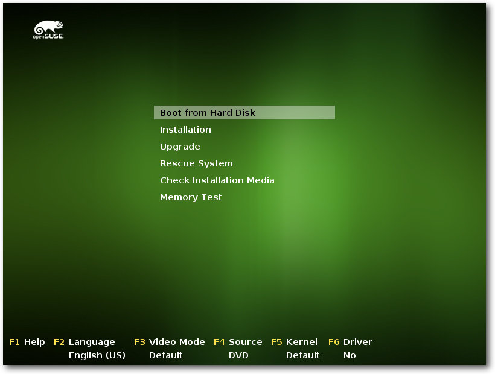

freiesMagazin Januar 2016
(ISSN 1867-7991)
Themen dieser Ausgabe sind u. a.
openSUSE 42.1 LeapEin Jahr ist es her, dass die von der Gemeinschaft erstellte openSUSE-Distribution eine Aktualisierung erfuhr. Nun liefern die Entwickler die Version 42.1 aus und versprechen, das Produkt – dem Versionssprung gemäß – stabilisiert, modernisiert und massiv verbessert zu haben. Nach Aussagen der Ersteller bietet die neue openSUSE 42.1 alles, was zeitgemäße Linux-Benutzer benötigen. Der Artikel wirft einen Blick auf die Boxversion der Distribution. (weiterlesen)
Let's Encrypt
Let's Encrypt ist eine von der Internet Security Research Group betriebene Zertifizierungsstelle, welche sich zum Ziel gesetzt hat, das Verschlüsseln von Daten im Internet zum Standard zu machen. Der Artikel beschreibt die Installation und die ersten Erfahrungen mit der Verwendung eines von Let's Encrypt ausgestellten Zertifikats. (weiterlesen)
Zum Inhaltsverzeichnis
Inhalt
Linux allgemein
openSUSE 42.1 Leap
Anleitungen
Vi für typische nano-Nutzer
Let's Encrypt
Community
Linux Presentation Day in Frankfurt
Rezension: Doing Math with Python
Rezension: Gut gerüstet gegen Überwachung im Web
Rezension: Coding with JavaScript for Dummies
Rezension: Java Web Security
Magazin
Leserbriefe
Veranstaltungen
Vorschau
Konventionen
Impressum
Zum Inhaltsverzeichnis
Editorial
Jahresabschluss 2015
Auch wir möchten den Jahreswechsel dazu nutzen kurz auf das Jahr 2015 in freiesMagazin zurückzublicken. Insgesamt 111 Artikel von 39 verschiedenen Autoren konnten wir 2015 auf 447 Seiten in freiesMagazin veröffentlichen. Das sind neun Artikel weniger im Vergleich zum Vorjahr und auch ein Autor weniger. Diese Zahlen bestätigen unseren Eindruck der vergangenen Ausgaben, die etwas dünner waren als wir uns das erhoffen. Wir konnten allerdings in der Zwischenzeit ein paar neue Autoren gewinnen und hoffen daher daher, dass die Anzahl der Artikel zumindest stabil bleibt. Schließlich möchten wir auch im Jahr unseres 10. Geburtstags weiterhin tolle und interessante Artikel für unsere Leser veröffentlichen. Auch die Downloadzahlen gingen im Laufe des Jahres etwas zurück. Bei der PDF-Ausgabe lagen die Downloads am Jahresanfang noch bei knapp über 7000 und schwankten im weiteren Verlauf meist zwischen knapp 6000 und fast 7000 Downloads. Die HTML-Ansichten der Mobilausgabe pendeln zwischen 2200 und 3200. Und die mobile EPUB-Version hat ca. 1100 bis knapp 1500 Downloads. Zusammengefasst erreichen wir weiterhin mindestens 9000 Downloads pro Ausgabe für PDF, HTML und EPUB (ggf. mit Doppelungen), was nach wie vor ein sehr guter Wert ist.freiesMagazin-Download-Statistik 2015.
Wie gewohnt veröffentlichen wir in dieser Ausgabe auch wieder den Jahresindex 2015, bei dem alle Artikel des vergangenen Jahres nach Schlagworten sortiert aufgelistet sind. Wir wünschen allen Lesern ein tolles Jahr 2016! Ihre freiesMagazin-Redaktion Beitrag teilen Beitrag kommentieren
Zum Inhaltsverzeichnis
openSUSE 42.1 Leap
von Mirko Lindner Ein Jahr ist es her, dass die von der Gemeinschaft erstellte openSUSE-Distribution eine Aktualisierung erfuhr. Nun liefern die Entwickler die Version 42.1 aus und versprechen, das Produkt – dem Versionssprung gemäß – stabilisiert, modernisiert und massiv verbessert zu haben. Nach Aussagen der Ersteller bietet die neue openSUSE 42.1 [1] alles, was zeitgemäße Linux-Benutzer benötigen. Der Artikel wirft einen Blick auf die Boxversion der Distribution. Redaktioneller Hinweis: Der Artikel „OpenSuse 42.1 Leap“ erschien erstmals bei Pro-Linux [2].Allgemein
Knapp zwanzig Jahre nach der ersten Ausgabe von „SuSE Linux“ im März 1994 steht die klassische SuSE-Distribution in einer Sackgasse. Seit geraumer Zeit bereitet den Entwicklern der Distribution der Umstand Sorgen, dass das Produkt in eine Position gerutscht sein könnte, die für zahlreiche Anwender nicht mehr zufriedenstellend ist [3]. Versuche, diesen Umstand zu ändern gab es bereits, doch verliefen die meisten Ansätze entweder im Sand oder sie brachten keine zufriedenstellenden Resultate. Im Jahr 2014 hatte das Team die beiden Entwicklerprojekte „Tumbleweed“ und „Factory“ zusammengelegt [4] und ein Rolling-Release angekündigt. Das führte allerdings weniger zu neuen Anwendern, sondern eher dazu, dass viele Gemeinschaftsmitglieder und Entwickler sich dem Rolling-Release „Tumbleweed“ zuwandten. Die stabile Ausgabe verwaiste weiter. Die Veröffentlichung von openSUSE 13.2, das eigentlich für Sommer 2014 geplant war und verschoben werden musste, markierte schließlich eine imaginäre Wende. Vor allem die Bekanntgabe, wonach die Mitarbeiter von SUSE sich künftig anderen Aufgaben widmen sollten, stieß auf Skepsis in der Gemeinschaft und bekräftigte die Meinung, wonach von openSUSE nicht mehr mit Innovationen zu rechnen sei. Das Team sah sich deshalb zu einer Klarstellung gezwungen und erklärte, dass SUSE sich keinesfalls aus der Entwicklung von openSUSE verabschieden, sondern nur die Ressourcen besser verteilen wolle. Im April hatte SUSE schließlich erklärt [5], die Entwicklung von openSUSE direkt zu unterstützen und einen Großteil der Quellen für SUSE Linux Enterprise (SLE) auch in den openSUSE-Build-Service (OSB) einzuspeisen. Die Idee dahinter: SUSE kümmert sich um die Basis, wohingegen die freie Gemeinschaft den Desktop und die darauf aufbauenden Anwendungen im Rahmen von „Tumbleweed“ pflegt. Jetzt steht das Resultat in Form von „openSUSE 42.1 Leap“ allen Interessenten zum Bezug bereit.Lieferumfang
Die neue openSUSE bietet wie immer eine Fülle von Applikationen. Bereits beim Herunterladen fällt auf, dass openSUSE in puncto Vielfältigkeit in der neuen Version zurückstecken musste. So gibt es in der Downloadoption weder eine 32-Bit- noch eine Live-Variante des Produktes. Das Fehlen der beiden Versionen ist dem neuen Unterbau geschuldet, von dem es solche Varianten ebenso nicht gibt. Da die Download-Zahlen der Live- und x86-32-Medien ohnehin rückläufig gewesen sein sollen, fiel dem Projekt die Wahl wohl auch nicht wirklich schwer. Auch der Wunsch, die so frei geworden Ressourcen in die Qualitätskontrolle zu stecken, kann nur begrüßt werden. Ärgerlich ist es trotz allem für all jene, die das Produkt nicht kennen und es beispielsweise ausprobieren oder auf älterer Hardware installieren wollten. Der Kernel weist nun die Versionsnummer 4.1.12 auf. Das entspricht weitgehend dem derzeit aktuellsten von Greg Kroah-Hartman betreuten Zweig mit Langzeit-Support. Insgesamt bringt der Linux-Kern 4.1 über 11.660 Änderungen und ist um über 200.000 Zeilen Code gewachsen. Das Dateisystem Ext4 bietet jetzt eine transparente Verschlüsselung. Aufgenommen wurde auch das neue virtuelle Dateisystem tracefs, das dazu dient, Tracing zu steuern und die Daten auszulesen. Ein neuer Treiber ermöglicht die effektive Nutzung von großen nichtflüchtigen Speichern als Blockgeräte. Der zram-Treiber dagegen erhielt die Möglichkeit, Datenblöcke zu komprimieren. Die Basis der Distribution bildet im Gegensatz zu vorherigen Versionen nicht mehr openSUSE Tumbleweed, sondern SUSE Linux Enterprise. Abgesehen von dem Kernel – openSUSE nutzt die Version 4.1.10 und SLE in der neuesten Testversion den Kernel 3.12.49 – sind die Unterschiede zwischen der Basis beider Distributionen marginal. Vergleicht man die aktuelle RC-Version von SLE mit dem von openSUSE, so finden sich in der Basisauswahl kaum Unterschiede. Die Komponenten von openSUSE 42.1 sind glibc in der Version 2.19, GCC 4.8.5 und X.org 7.6. Aufgrund der veränderten Basis erfolgte auch eine Anpassung der Versionsnummer und der Supportdauer. So richtet sich die Veröffentlichung neuer Versionen am Releasezyklus von SLE aus, sodass eine neue Hauptversion von openSUSE für mindestens 36 Monate unterstützt werden soll. Jährliche Aktualisierungen der SLE-Basis führen zur Anhebung der Unterversion von openSUSE, die wiederum für jeweils 18 Monate gültig sein wird. So wird aller Voraussicht nach die kommende Version der Distribution (openSUSE 42.2) in einem Jahr erscheinen und über dieselbe Basis wie die momentan aktuelle Version verfügen. Den Unterschied werden dann Anwendungen, Desktops oder Server ausmachen – so der grobe Plan. openSUSE 42.1 Leap Installationsbildschirm.
Installation und Konfiguration
Das Booten oder die Installation der DVD klappte bei allen Testsystemen anstandslos. Funktionell gesehen unterlag die Auswahl der möglichen Installationsmethoden keinerlei Änderung und gleicht – von kleineren Änderungen abgesehen – weitgehend der Installation von openSUSE 13.2. So bietet openSUSE immer noch eine automatische Installation wahlweise mit deaktiviertem ACPI oder in einer sicheren Umgebung, eine manuelle Installation, Rettungssystem, Speicher- oder Firmwaretest zur Auswahl an. Darüber hinaus lassen sich bereits beim ersten Booten der DVD die Sprache und die zu verwendende Auflösung bestimmen. Gemäß der neuen Nomenklatur wurde auch die Farbgebung marginal verändert, wobei das satte Grün weiterhin das Markenzeichen der Distribution darstellt. Die Installation birgt keine großen Überraschungen und entspricht weitgehend der Installation von SUSE Linux Enterprise 12.1 RC. Nach der obligatorischen Bestätigung des Lizenztextes, der zugleich mit der Einstellung der Sprache und Tastatur erscheint, kommt man zur Festlegung der Netzwerkumgebung, gefolgt von der Auswahl von Zusatzrepositorien. Bei SLE 12.1 kommt im Übrigen an dieser Stelle noch die Registrierung beim Anbieter, die zum Bezug von Updates berechtigt. Als einer der wenigen Hersteller empfiehlt SUSE das Dateisystem Btrfs für die System-Partition. Weitere Verzeichnisse werden in Form von Subvolumen erstellt. Wünscht man eine dedizierte /home-Partition, so schlägt der Installer XFS als Dateisystem vor. Mit von der Partie ist zudem auch noch Ext4, das allerdings nicht standardmäßig eingesetzt wird. Wer weitere Dateisysteme wünscht, muss die manuelle Partitionierung bemühen, die neben den bereits erwähnten auch noch Ext2, Ext3 und FAT sowie zahlreiche Partitionsvarianten zur Auswahl bereithält. Unter anderem lässt sich hier auch fortgeschrittene Partitionierung wie beispielsweise die Erstellung von RAID-Gruppen bewerkstelligen.Manuelle Aufteilung der Festplatten.
Nach der Festlegung des Datums und der Zeitzone kommt die Wahl der zu installierenden Umgebung. Wie gehabt ist der KDE-Desktop weiterhin Standard unter openSUSE. Allerdings lassen sich in der Übersicht auch GNOME, Xfce, LXDE, ein minimales X-Window-System oder der Textmodus auswählen.
Installationseinstellungen.
Was danach folgt, ist openSUSE-typisch: Yast schlägt die weiteren Schritte vor und erspart vor allem Anfängern lange Handbuchkonsultationen. Tief greifende Änderungen an der Paketauswahl können Anwender im Paketmanager durchführen. Diese können von einer simplen Auswahl eines Schemas über die Festlegung von Paketgruppen bis hin zu einer Installation einzelner Pakete reichen. Anzumerken ist aber, dass die manuelle Auswahl der Pakete unter Umständen die vorkonfigurierten Abbilder verändert, was zu einer längeren Installation führen kann. Es empfiehlt sich daher, filigrane Anpassungen an Paketen zu einem späteren Zeitpunkt durchzuführen.
Detaillierte Paketauswahl.
Weitere Anpassungen in der Zusammenfassung umfassen die Festlegung des Systemstarts der Distribution und das Verhalten des Bootloaders. Über den Menüpunkt „System- und Hardware-Einstellungen“ ist es zudem möglich, die Hardware-Erkennung zu überprüfen und zu verändern. Die eigentliche Konfiguration des Systems übernimmt aber das Verwaltungswerkzeug Yast. Die Erkennung der vorhandenen Geräte beherrschte das Tool dabei gewohnt souverän.
Aktualisierungen gegenüber openSUSE 13.2
Bereits beim ersten Blick in die Netzwerkeinstellungen fallen die geänderten Netzwerknamen auf. Nutzte openSUSE 13.2 so genannte „predictable network interface names“ wie beispielsweise „enp5s0“, kehrt openSUSE 42.1 Leap zu der bekannten Namensgebung zurück und benennt Netzwerkschnittstellen wieder eth0 usw. Anwender, die ihre alten Systeme aktualisiert haben, sollten dies berücksichtigen oder die alte Nomenklatur explizit verändern, um nicht versehentlich ihre Server von der Außenwelt abzuschneiden. Ein weiterer Unterschied gegenüber der alten openSUSE ist die Umstellung der Standard-Version des IPP-Protokolls von 1.1 zu 2.0. Damit ältere CUPS-Server wie beispielsweise die Version 1.3 in SLE 11 die Anfragen nicht mit einem „Bad Request“ ablehnen, ist es notwendig, das System anzupassen. Zudem wurde das CUPS-Browsing verändert. Anwender, die traditionelle CUPS-Browsing-Information vom Remote-CUPS-Server erhalten wollen, müssen deshalb cups-browsed auf dem lokalen Host starten. Wie das zu geschehen hat, beschreiben unter anderem die Release Notes der neuen Version. Der eigentliche Upgrade-Prozess von einer älteren openSUSE-Version auf Leap verlief ohne nennenswerte Probleme. Der Standarddesktop wurde von KDE 4 auf Plasma 5 geändert und viele, allerdings nicht alle, Einstellungen der alten Installation beibehalten.KDE Plasma 5 – Der Standarddesktop
Der Start der Distribution gestaltet sich wenig spektakulär. Das Produkt verzichtet auch in der aktuellen Version auf verspielte Grafiken und ausgefallene Ladebalken. Was auffällt, ist die gesteigerte Geschwindigkeit beim Booten, die sich gegenüber der alten Version merklich verändert hat. Hatte openSUSE 13.2 vom Boot-Bildschirm bis zum KDE-Login auf unserem Referenzsystem noch knapp 12 Sekunden benötigt, so erledigte openSUSE 42.1 dies binnen 8 Sekunden. Der Standard-Desktop unter openSUSE heißt weiterhin KDE – genauer gesagt die neue Generation des Desktops unter dem Namen KDE Plasma 5. Plasma 5 ist in weiten Teilen eine Portierung des alten Plasma-Desktops auf die aktuelle Bibliothek Qt 5 und die reorganisierten Bibliotheken. Die Portierung nutzt QML und Qt Quick 2 sowie dessen auf OpenGL ES aufsetzenden Szenengraphen. Die Entwickler selbst versprechen, nichts an den Konzepten von Plasma geändert zu haben. So sollen bisherige Arbeitsabläufe weiter funktionieren, wobei weitere Verfeinerungen vorgenommen und das Erscheinungsbild weiter verbessert sein sollen. Der in der Version 5.4.2 vorliegende Desktop findet erstmals unter openSUSE seinen Einsatz als Standard und kommt mit den wichtigsten Applikationen. Die Umgebung gestaltet sich aufgeräumt und wirkt bereits von Haus aus recht elegant. Die Menüstruktur ist aufgeräumt und lässt kaum Wünsche offen.Plasma 5.4.
Als Stil für die Bedienelemente und Symbole kommt „Breeze“ zum Einsatz. Es ist sowohl in einer dunklen als auch in einer hellen Variante vorhanden und soll für eine aufgeräumte und moderne Oberfläche sorgen. Dazu wurde unter anderem der Kontrast verändert und die Typografie verbessert. Die Bedienelemente sind zudem erheblich flacher geworden. Wer mit den neuen Icons nicht klarkommt, kann sie auch gegen die aus der KDE4-Umgebung bekannten Oxygen-Symbole oder die ebenfalls im Standardpaket enthaltenen Adwaita-Icons tauschen. Weitere Icons können selbstredend manuell installiert und ebenfalls genutzt werden. Anwendungen, die noch nicht auf Plasma und die KDE-Bibliotheken (KF) portiert wurden, basieren auf KDE 4.14.10. Dazugehören unter anderem Amarok 2.8.0, Digikam 4.13 oder K3b 2.0.3. Manche der Anwendungen wie beispielsweise Digikam werden bereits portiert, andere wiederum werden wohl noch eine Weile in ihren alten Versionen verweilen. Erfreulich ist, dass die Anbindung der alten Applikationen an die neue Generation der Umgebung durchaus als gelungen bezeichnet werden kann und sowohl visuell als auch funktionell überzeugt. Dasselbe gilt auch für GTK+-Anwendungen. Auch hier kann die visuelle Anbindung als besonders gelungen bezeichnet werden. Die Kommunikation mit der geschäftlichen Außenwelt übernimmt unter openSUSEs Plasma 5 das alte KDE PIM, das immer noch in einer Version für KDE4 vorliegt – samt allen Vor- und Nachteilen wie beispielsweise der immer noch recht häufig auftretenden Instabilität. Zum Browsen setzt openSUSE 42.1 auf Firefox 42. Konqueror ist zwar installiert, wird aber nicht explizit verwendet. Weiterhin installiert werden LibreOffice 5.0.2 zur Bearbeitung von Dokumenten, GIMP 2.8 zur digitalen Bildbearbeitung und Hugin. Im Allgemeinen fällt allerdings auf, dass immer noch sehr viele Anwendungen KDE4-Bibliotheken benutzen. Die Zahl der portierten KF5-Werkzeuge ist zwar nicht unbedingt gering, aber durchaus verbesserungswürdig. Negativ fällt dagegen die Stabilität der Standardumgebung auf, die durchaus verbesserungswürdig ist. Denn während Abstürze von kleineren Tools noch verkraftbar sind, gehen die Abstürze von Komponenten, wie beispielsweise der Kontrollleiste oder des Dateimanagers Dolphin, irgendwann wohl auch dem größten Fan auf den Nerv. Hier muss noch etliches passieren, denn bei dem mehrwöchigen Test verging auf manchen Systemen kaum ein Tag, an dem nicht irgendeine Komponente abgestürzt wäre oder wenigstens nicht korrekt funktionierte – besonders frustrierend war das bei der Nutzung von mehreren Kontrollleisten, die simultan abgestürzt sind, und bei Multiscreen-Systemen.
GNOME 3 - Die Alternative
Neben dem Standarddesktop des KDE-Projektes liefert openSUSE auch den zweiten großen Desktop, GNOME, mit. Bei der Umgebung hinkt openSUSE Leap etwas der Entwicklung hinterher. GNOME liegt in der Version 3.16.4 vor und ist ebenso wie Plasma 5 bereits vorkonfiguriert. Entscheidet man sich bei der Auswahl des Desktops bei der Installation für GNOME, so werden neben der Umgebung auch Firefox, LibreOffice, GIMP und Inkscape eingerichtet. Die Bürokommunikation erledigt in diesem Fall das GNOME-eigene Evolution und für die Medienwiedergabe ist GNOME Musik zuständig. GNOME 3.16 selbst ist eine Veröffentlichung mit vielen größeren neuen Funktionen. Über 1.000 Entwickler haben in einem halben Jahr insgesamt mehr als 33.500 Änderungen gegenüber GNOME 3.14 vorgenommen und die Umgebung massiv aufgewertet. Die wichtigste Neuerung dürfte die lang geplante Neuimplementation der Benachrichtigungen sein. Sie ändert die Interaktion mit dem Benutzer in einem Punkt: Während die Benachrichtigungs-Popups weitgehend unverändert blieben, sind ältere Benachrichtigungen, auch solche, die man möglicherweise verpasst hat, jetzt im Kalender-Popup zu finden. Die Oberfläche diverser mitgelieferter Programme, darunter der PDF-Betrachter Evince, der Bildbetrachter Eye of Gnome (Eog) und der Dateimanager Nautilus, erhielt Verbesserungen. Besonders an Letzterem wurde stark gearbeitet. Die Grafiken von GNOME wurden zudem erneuert.GNOME 3.16.
Erstmals in GNOME 3.16 mitgelieferte neue Programme sind Kalender, die Zeichentabelle Zeichen und der E-Book-Betrachter „Bücher“, der ebenfalls in openSUSE 42.1 Leap seine Verwendung findet. Das Frontend für die Paketverwaltung, GNOME Software, ermöglicht jetzt auch die Installation von Codecs. Die Anbindung der Anwendung unter openSUSE wurde dabei gut umgesetzt, sodass sich die Lösung für eine einfache Installation von Paketen durchaus eignet. Allgemein fällt auf, dass ähnlich wie KDE Plasma auch GNOME weitgehend unberührt blieb. Abgesehen von einem veränderten Hintergrund und der Beigabe der eigenen Anwendungen wurde die Umgebung kaum angepasst – das aber durchaus erfolgreich. So verhielt sich GNOME 3 während des knapp dreiwöchigen Zeitraums weitgehend souverän und konnte nie aus dem Tritt gebracht werden. Lediglich die Anbindung von KDE-Anwendungen sollte verbessert werden. So tauchten beispielsweise mittels GNOME Software installierte KDE-Anwendungen oftmals nicht im Menü auf. Hat man sie aber gefunden, nutzten auch KDE-Applikationen unter GNOME ein ähnliches Thema und waren grafisch gut eingebunden.
Weitere Desktops
Xfce 4.12.1, LXDE 0.99, LXQt 0.9, Enlightenment 19 und MATE 1.10 stellen weitere Umgebungen dar, die entweder bereits bei der Installation aus der Liste der Desktops ausgewählt werden oder separat als Schemata benutzt werden können. Genauso wie GNOME präsentieren sich auch die anderen Alternativen zum Standard aufgeräumt und an die Distribution angepasst. Die Umgebungen richten sich dabei an Anwender, die entweder eine schlankere Alternative zu den Platzhirschen brauchen oder denen die Funktionen von GNOME und KDE nicht zusagen. Selbstredend installiert openSUSE bei der Auswahl der Umgebungen die speziell an die Desktops angepassten Applikationen, gepaart mit eigenen Tools. So kann beispielsweise beim ersten Start von Enlightenment neben der Standardumgebung auch ein openSUSE-Classic-Desktop oder openSUSE Dock festgelegt werden. Eine Ausnahme bei der schier schon perfekten Konfiguration der Desktops bildet der LXQt-Desktop, der kaum eingerichtet wurde und zahlreiche Fehler beinhaltete. So ließ sich beim Test beispielsweise das /home-Verzeichnis nicht korrekt öffnen und Wechselmedien nicht in das System einbinden. Hier sollte das Team noch nachbessern.Enlightenment 19.
LXDE 0.99.
MATE 1.10.
Server und weitere Dienste
Neben der Möglichkeit, openSUSE auf einem Desktop zu betreiben, ermöglicht die Distribution auch die Installation als Server. Ob es sinnvoll ist, einen Unternehmensserver auf der Basis einer Consumer-Distribution aufzusetzen, sei dahingestellt – auch wenn openSUSE 42.1 Leap durch die veränderte Basis sich möglicherweise besonders für einen Einsatz als Server eignet. Fast alle Server-Dienste, die openSUSE 42.1 mit sich bringt, sind entweder vorkonfiguriert oder werden mit einer prinzipiell funktionsfähigen Installation geliefert. Besonders erfreulich für passionierte Heimnutzer und angehende Administratoren, aber auch für professionelle Anwender, die nicht stundenlang Konfigurationsdateien studieren wollen, dürften die vielen Helfer in Yast sein. Im direkten Vergleich zur Vorgängerversion wurde Yast um diverse Module erweitert und von zahlreichen Fehlern befreit. Die Entwickler selbst sprechen von über 600 Korrekturen, die in die neue Version eingeflossen sind. Neu in der aktuellen Version von Yast sind Module für Docker-Konfiguration, Schriften und die Journal-Anzeige. Letzteres ermöglicht unter anderem, das systemd-Journal unter der Berücksichtigung der systemd-Einheiten oder des Datums schnell nach bestimmten Ereignissen zu durchsuchen. Passend zur Basis nutzt auch die neue Version von openSUSE systemd 210.Die neue Journal-Anzeige in Yast.
In puncto „unfreie Software“ verhält sich die neue openSUSE Leap konservativer, als es der Vorgänger noch tat. So bindet die neue Version keine unfreie Software in der Standardausführung ein. Das „Non-OSS“-Repository wird zwar aktualisiert, ist aber nicht explizit aktiviert, was dazu führt, dass Anwender, die beispielsweise MP3-Unterstützung haben möchten, ihre Software ab sofort explizit auswählen und installieren müssen. Erschwerend kommt noch hinzu, dass der „Non-OSS“-Bereich nur ausgewählte Software beinhaltet, wozu beispielsweise Flash nicht gehört.
Das neue Modul für Schriften.
Fazit
Der Eindruck, den openSUSE 42.1 Leap hinterlässt, ist nicht einfach. Während die SLE-Basis der Distribution auf allen unseren Systemen durchaus überzeugen kann und auch die Serverkomponenten weitgehend so funktionieren, wie man es von einem professionellen Linux-System erwartet, kann die grafische Standardumgebung nicht das halten, was sie verspricht. Denn mit der Vorauswahl des Desktops wird die Funktionsweise festgelegt, an der sich die Distribution messen lassen muss. Ob es allerdings sinnvoll war, den immer noch recht wackeligen und teils funktionsarmen Plasma-Desktop als Standard zu empfehlen, darf angezweifelt werden. Dass der Anwender zudem im Jahre 2016 ein Desktop-System serviert bekommt, dessen Komponenten teilweise so instabil sind, ist nicht akzeptabel. Der Fairness halber muss man allerdings erwähnen, dass nicht alle Desktop-Systeme gleichermaßen instabil waren – hier gab es durchaus Unterschiede, sei es, ob der Desktop in einer virtuellen Umgebung gestartet wurde oder eine andere Grafikkarte nutzte. Mit der Freigabe der neuen Version konterkariert openSUSE deshalb seine Bemühungen, „Leap“ als eine Alternative zu „Tumbleweed“ zu etablieren. Die neue Version, wohl für Neulinge und konservative Anwender gedacht, kann gerade das nicht halten, was die Zielgruppe verlangt und was sie vollmundig verspricht – einen stabilen und funktionellen Heimdesktop. Sei es, weil er schlicht nicht stabil ist oder aber standardmäßig wichtige Funktionen für Heimanwender und Neulinge, wie beispielsweise MP3 oder Flash, vermissen lässt. Was bleibt, ist eine neue openSUSE-Version, die Linux-Anfängern nur bedingt empfohlen werden kann. Zu oft gerät der Nutzer – sofern nicht geführt – in Situationen, aus denen er sich ohne fundierte Kenntnisse nicht befreien kann. Ein Beispiel hierfür wäre ein schwarzes Bild nach einer Plasma-Fehlfunktion. Doch auch Bestandsanwender der alten Version werden an ihre Grenzen geführt und nicht selten das alte openSUSE 13.2 mit KDE 4 zurückwünschen – oder gleich zu „Tumbleweed“ mit einem alternativen Desktop greifen. Ob openSUSE 42.1 deshalb ein Leap (auf deutsch: Sprung) ist, muss jeder für sich selbst herausfinden. Links[1] https://www.opensuse.org/
[2] http://www.pro-linux.de/artikel/2/1803/opensuse-421-leap.html
[3] http://www.pro-linux.de/news/1/22456/opensuse-auf-identitaetssuche.html
[4] http://www.pro-linux.de/news/1/21661/opensuse-legt-tumbleweed-und-factory-zusammen.html
[5] http://www.pro-linux.de/news/1/22474/opensuse-42-fuer-november-geplant.html
| Autoreninformation |
| Mirko Lindner (Webseite) befasst sich seit 1990 mit Unix. Seit 1998 ist er aktiv in die Entwicklung des Kernels eingebunden und verantwortlich für diverse Treiber und Subsysteme für Linux und andere freie Plattformen. Daneben ist er einer der Betreiber von Pro-Linux.de. |
Beitrag teilen Beitrag kommentieren
Zum Inhaltsverzeichnis
Vi für typische nano-Nutzer
von Steffen Rumberger Der Texteditor Vi [1] gilt als sehr leistungsfähig und wird deshalb vielfach von Profis verwendet. Neulinge nutzen oft nano [2], einen Texteditor, der dafür bekannt ist, „klein und benutzerfreundlich“ zu sein. Redaktioneller Hinweis: Dies ist eine Übersetzung des Textes „Vi for nano users“ [3] von Markus Schnalke. Entgegen der herkömmlichen Konvention von freiesMagazin werden die zu drückenden Tasten direkt im Kästchen dargestellt, d. h. in diesem Artikel ist ein „/ “ der Schrägstrich (normalerweise als „Umschalt “ + „7 “ dargestellt), ein „a “ ist ein kleines A (normalerweise als „A “ dargestellt), wohingegen „A “ in diesem Artikel ein großes A ist (normalerweise als „Umschalt “ + „A “ dargestellt). Dieser Artikel soll zeigen, dass das Erlernen der Grundlagen von vi nicht viel schwieriger ist als das Lernen von nano – vor allem, wenn der vim benutzt wird. (Vim (Vi IMproved) ist eine Weiterentwicklung des Texteditors vi.)Die modale Benutzerschnittstelle
Vi zu lernen bedeutet das Verstehen der modalen Benutzerschnittstelle, welche das Grundkonzept der Bedienung darstellt. Die Modi machen vi „seltsam“, aber gleichzeitig mächtig. Hat man erst einmal das modale Konzept verstanden, dann wird der Rest einfach sein. Nach dem Start von vi befindet man sich zunächst im Befehlsmodus (command mode), dem zentralen Modus von vi. Durch Drücken der Taste „Escape“ gelangt man immer wieder zurück in diesen Befehlsmodus. Um Text einzufügen, muss man in den Einfügemodus (insert mode) wechseln. Dies tut man, indem man die Taste „i“ (Einfügen vor dem Cursor) oder „A“ (ans Zeilenende anhängen) drückt. Wenn man die Texteingabe abgeschlossen hat, drückt man „Escape“, um zurück in den Befehlsmodus zu wechseln. Der Kommandozeilenmodus (ex mode) umfasst Verwaltungsaufgaben. Dorthin kann man durch Eingabe von „:“ (Doppelpunkt) wechseln. Daraufhin erscheint in der letzten Terminalzeile ein Doppelpunkt. Mit :w speichert man die Datei, :wq speichert und beendet, :q! beendet ohne zu speichern. „Enter“ führt die Operation aus, „Escape“ bricht sie ab. In beiden Fällen gelangt man zurück in den Befehlsmodus (oder zur Shell im Fall des Beendens).Die Modi des vi.
Cursor-Bewegung
Bei Benutzung von vim ist die Bewegung des Cursors sehr einfach: Die Pfeiltasten und Bildlauftasten („Bild auf“ / „Bild ab“) arbeiten sowohl im Befehls- als auch im Einfügemodus. Bei vi kann der Cursor nur im Befehlsmodus bewegt werden: Mit den Tasten „h“ nach links, „j“ nach unten, „k“ nach oben, „l“ nach rechts. Mit „Strg“ + „f“ blättert man eine Seite vor und mit „Strg“ + „b“ eine Seite zurück.Cursor-Bewegung.
Weitere wichtige Funktionen
Um Text zu suchen (eigentlich reguläre Ausdrücke) drückt man „/“ (Schrägstrich) im Befehlsmodus, gibt das zu suchende Muster ein und bestätigt mit der „Enter“-Taste. Der Cursor springt zum nächsten Treffer. Man kann mit den Tasten „n“ (vorwärts) und „N“ (rückwärts) von Treffer zu Treffer springen. Um zu einer bestimmten Zeile zu springen, gibt man im Befehlsmodus die Zeilennummer ein (diese wird evtl. nicht angezeigt) und „G“. „1“ gefolgt von „G“ steht für die erste Zeile, „G“ ohne Zahl bedeutet die letzte Zeile. Um die letzte Änderung rückgängig zu machen drückt man „u“, wobei es von der Implementierung abhängt, ob mehrere Undo-Schritte möglich sind oder nur einer.Warum vi benutzen und nicht einfach nano?
Der Editor vi ist omnipräsent und er wächst mit, wenn man sich verbessert. Man kann damit zum Beispiel auch Dateien effektiver bearbeiten. Mit dem Editor vi kann man schrittweise weitere Funktionen und Tastaturkürzel lernen, welche die Produktivität verbessern können. Dieser Text beschreibt nur diejenigen Grundfunktionen des Editors vi, die Benutzer des Editors nano typischerweise nutzen. Vi mit diesem Wissenstand zu nutzen, ist kaum besser als direkt nano zu benutzen, aber es ist die Grundlage für die Beherrschung von vi. Der Befehlsmodus bietet eine Vielzahl von Funktionen, die man nicht mehr missen möchte, sobald man sie einmal gelernt hat. Profis sind zudem in der Lage beeindruckende Operationen im Kommandozeilenmodus zu tätigen. So stellt vi zwei leistungsstarke Editoren in einem dar: ex und vi. Links[1] https://de.wikipedia.org/wiki/Vi
[2] http://www.nano-editor.org/
[3] http://www.marmaro.de/docs/vi-for-nano-users/
| Autoreninformation |
| Steffen Rumberger (Webseite) ist Debian GNU/Linux-Nutzer und benutzt auf der Konsole den Editor vi. |
Beitrag teilen Beitrag kommentieren
Zum Inhaltsverzeichnis
Let's Encrypt
von Christoph Schmidt Dieser Artikel beschreibt die Installation und die ersten Erfahrungen mit der Verwendung eines von Let's Encrypt ausgestellten Zertifikats.Was ist Let's Encrypt?
Let's Encrypt [1] ist eine von der Internet Security Research Group (ISRG) betriebene Zertifizierungsstelle (CA, certificate authority), die sich zum Ziel gesetzt hat, das Verschlüsseln von Daten im Internet zum Standard zu machen. Dazu stellt sie kostenlose und leicht installierbare X.509-Zertifikate zur Verfügung, mit denen Internetdienste wie zum Beispiel Webseiten sich im Internet authentifizieren und ihre Daten verschlüsseln können. Nach einer geschlossenen Testphase trat das Projekt am 3. Dezember 2015 in eine öffentliche Testphase ein, in der jeder ein Zertifikat beantragen kann. Die ISRG ist eine gemeinnützige Organisation mit Sitz in den USA, deren Hauptsponsoren die Electronic Frontier Foundation (EFF), die Mozilla Foundation, Akamai und Cisco Systems sind.Wozu dienen Zertifikate?
Die von einer CA ausgestellten Zertifikate haben zwei Funktionen: Erstens identifiziert sich der Internetdienst mit diesem Zertifikat, d. h. der Besucher einer Webseite kann sich sicher sein, sich wirklich auf der Seite zu befinden, welche er besuchen wollte. Zweitens wird der Datenverkehr zwischen der besuchten Webseite und dem Rechner des Besuchers verschlüsselt, sodass unbefugte Dritte, die Zugriff auf den Datenstrom haben, diesen nicht mitlesen können. Webseiten mit einem solchen Zertifikat erkennt man daran, dass die URL (Uniform Resource Locator oder „Internetadresse“) mit https:// anstelle von http:// beginnt. Browser stellen normalerweise auch ein Vorhängeschloss in der Adresszeile vor die URL. Betreibt man nun selbst einen solchen Internetdienst und hat bisher die Komplikationen und/oder Kosten eines Zertifikats gescheut, gibt es nun einen einfachen und kostenlosen Weg, seinen Server mit einem solchen auszustatten. Let's Encrypt stellt Zertifikate sowohl für Domains als auch Sub-Domains aus. Eine Domain setzt sich aus dem eigentlichen Domainnamen (z. B. freiesmagazin) und der TLD (Top-Level-Domain, z. B. de) zusammen: freiesmagazin.de. Sub-Domains enthalten einen weiteren vorangestellten Namensteil, welcher sich traditionell auf einen Rechner bezog, z. B. www.freiesmagazin.de. www war früher dabei der Rechner, auf dem der Webserver lief – zu Zeiten, als jeder Service seine eigene Hardware besaß. Heute werden Sub-Domains häufig bei dynamischem DNS (Domain Name Service) verwendet. Dieser Service wird meist von Privatpersonen in Anspruch genommen, die über einen gewöhnlichen DSL-Anschluss mit dynamischer IP-Adresse mit dem Internet verbunden sind. Dabei ändert der Internet Service Provider (ISP, z. B. Telekom, Vodafone) in regelmäßigen Abständen die IP-Adresse des Anschlusses, sodass der Server im eigenen Heim nicht immer unter der gleichen IP-Adresse vom Internet aus zu erreichen ist. Um dieses Problem zu umgehen, meldet sich der Server nach jeder Änderung der IP-Adresse beim DNS Service, damit dieser die neue IP-Adresse wieder der eigenen Sub-Domain zuweist. Eine solche Sub-Domain hat die allgemeine Form meine-sub-domain.domain.tld, wobei meine-sub-domain ein frei wählbarer Name ist und domain.tld dem DNS-Anbieter gehört.Installation von Let's Encrypt
Eines vorneweg: Dieser Artikel beschäftigt sich nicht mit dem Aufsetzen und Konfigurieren eines Webservers, sondern nur mit der Installation und dem Erneuern der Zertifikate. Die Einrichtung eines Webservers würde den Umfang eines einzelnen Artikels bei weitem übertreffen. Als Beispiel wird in diesem Artikel ein Apache-Webserver auf Debian 8 („Jessie“) verwendet. Die Installation und Aktualisierung der Zertifikate ist unabhängig vom verwendeten Webserver, lediglich die Einbindung in den Webserver ist verschieden. Die Let's Encrypt-Anwendung kann entweder über das Klonen des Projektes von Github oder durch Download von [2] installiert werden. Let's Encrypt selbst empfiehlt die Installation von Github wegen der einfacheren Aktualisierung der Anwendung. Dazu muss zuerst git über die Paketverwaltung installiert werden. Anschließend kann das Projekt geklont werden:$ git clone https://github.com/letsencrypt/letsencrypt
Nach dem Klonen des Projektes erscheint ein neues Verzeichnis letsencrypt.
Zum Aktualisieren wechselt man in das neue Verzeichnis und führt folgenden
Befehl aus:
$ git pull
Erstellen des ersten Zertifikates
Zum Erstellen des ersten Zertifikates führt man im Verzeichnis letsencrypt das folgende Kommando aus:$ ./letsencrypt-auto --server https://acme-v01.api.letsencrypt.org/directory auth
Läuft der Webserver hierbei hinter einer Firewall, muss sichergestellt sein, dass
die Ports 80 (HTTP) und 443 (HTTPS) offen sind. Weiterhin muss der Webserver
auch unter der Domain, für die das Zertifikat ausgestellt werden soll, vom
Internet aus über DNS erreichbar sein.
Zunächst überprüft letsencrypt-auto, ob irgendwelche Aktualisierungen
verfügbar sind und installiert diese gegebenenfalls. Danach werden dem Anwender
einige Fragen gestellt, die zur Erstellung des Zertifikates notwendig
sind:
- Zuerst muss der zu verwendende Webserver angegeben werden. Falls bereits ein Webserver aufgesetzt ist, sollte dieser verwendet werden, da nur ein Webserver auf den HTTP(S) Port zugreifen kann. Ansonsten bietet letsencrypt-auto auch an, einen eigenen Webserver zu verwenden (standalone).
- Danach wird nach einer E-Mail-Adresse gefragt, unter der das Zertifikat registriert werden soll. Diese wird von Let's Encrypt für dringende Benachrichtigungen und zur Wiederherstellung verlorener Zertifikate verwendet.
- Anschließend müssen die Servicebedingungen (terms of service) akzeptiert werden.
- Zuletzt wird eine Liste mit den Domainnamen abgefragt. Falls Zertifikate für mehr als eine Domain angefordert werden sollen, müssen die Domainnamen mit Komma oder Leerzeichen getrennt werden.
Einbinden der Zertifikate
Nachdem die Zertifikate nun auf dem Server installiert sind, müssen diese auch noch im Webserver eingebunden werden. Dies kann entweder automatisch oder manuell erfolgen. Für die automatische Installation muss beim Erstellen des Zertifikates lediglich letsencrypt-auto run anstelle von letsencrypt-auto auth angegeben werden oder – falls die Zertifikate bereits erstellt wurden – letsencrypt-auto install. Die automatische Installation funktioniert derzeit sowohl mit Apache und – momentan noch als Beta – mit NGINX. Wer nicht möchte, dass letsencrypt-auto die Konfiguration seines Webservers automatisch verändert, kann die Zertifikate auch manuell einbinden. Hierzu muss zuallererst das SSL Modul in Apache aktiviert werden:# a2enmod ssl
Danach muss ein virtueller Host für SSL angelegt werden. Hierfür erstellt man
eine neue Datei im Verzeichnis /etc/apache2/sites-available/. Der Dateiname
ist hierbei irrelevant, es empfiehlt sich aber, den Domainnamen im Dateinamen
unterzubringen, zum Beispiel ssl.domain.tld.conf, damit man bei diversen
Domains die entsprechende Datei schnell findet. Ein minimaler Inhalt für diese
Datei könnte der Folgende sein:
<IfModule mod_ssl.c>
<VirtualHost _default_:443>
SSLEngine on
SSLCertificateFile /etc/letsencrypt/live/domain.tld/cert.pem
SSLCertificateKeyFile /etc/letsencrypt/live/domain.tld/privkey.pem
SSLCertificateChainFile /etc/letsencrypt/live/domain.tld/chain.pem
</VirtualHost>
</IfModule>
<VirtualHost _default_:443>
SSLEngine on
SSLCertificateFile /etc/letsencrypt/live/domain.tld/cert.pem
SSLCertificateKeyFile /etc/letsencrypt/live/domain.tld/privkey.pem
SSLCertificateChainFile /etc/letsencrypt/live/domain.tld/chain.pem
</VirtualHost>
</IfModule>
- SSLEngine: Diese Anweisung aktiviert das SSL/TLS Protokoll für diesen virtuellen Host.
- SSLCertificateFile: Dies ist der öffentliche Teil des Zertifikat-Schlüssels.
- SSLCertificateKeyFile: Dies ist der private Teil des Zertifikats-Schlüssels.
- SSLCertificateChainFile: Diese Datei enthält alle öffentlichen Zertifikat-Schlüssel der CAs, welche das Zertifikat ausgestellt haben.
<VirtualHost *:80>
RewriteEngine on
RewriteRule ^ https://%{HTTP_HOST}/%{REQUEST_URI} [L,QSA,R=permanent]
</VirtualHost>
RewriteEngine on
RewriteRule ^ https://%{HTTP_HOST}/%{REQUEST_URI} [L,QSA,R=permanent]
</VirtualHost>
- RewriteEngine: Diese Anweisung erlaubt das Ändern von URLs.
- RewriteRule: Mit dieser Anweisung werden alle HTTP-Anfragen auf HTTPS umgeleitet. Der Rest der URL bleibt dabei unverändert, zum Beispiel http://domain.tld/login wird zu https://domain.tld/login. HTTP_HOST entspricht hierbei der Domain (domain.tld) und REQUEST_URI der angeforderten Seite (login).
# a2ensite ssl.domain.tld
Dieser Befehl legt einen Link in /etc/apache2/sites-enabled auf die neue
Seite in /etc/apache2/sites-available an. Sollten bereits Seiten eingerichtet
sein, muss man diese gegebenenfalls mit a2dissite deaktivieren oder mit
der Anweisung ServerName in der Konfiguration des virtuellen Hosts (in
/etc/apache2/sites-available) auf bestimmte Hosts beschränken, um
Konflikte zu vermeiden.
Zuletzt wird der Webserver neu gestartet:
# apache2ctl restart
Aktualisieren der Zertifikate
Die von Let's Encrypt ausgestellten Zertifikate sind nur drei Monate lang gültig. Um nach Ablauf dieses Zeitraums ein neues Zertifikat zu beantragen, kann man die oben beschriebenen Schritte wiederholen oder aber den ganzen Prozess automatisieren. Hierfür müssen lediglich die Antworten für die von letsencrypt-auto gestellten Fragen bereits beim Aufruf mitgeliefert werden. Dies geschieht entweder über die Kommandozeilen-Parameter oder man legt die Konfigurationsdatei cli.ini im Verzeichnis /etc/letsencrypt entsprechend an:server = https://acme-v01.api.letsencrypt.org/directory
email = webmaster@domain.tld
authenticator = webroot
webroot-path = /var/www/html/
domains = domain.tld
agree-tos = True
renew-by-default = True
email = webmaster@domain.tld
authenticator = webroot
webroot-path = /var/www/html/
domains = domain.tld
agree-tos = True
renew-by-default = True
- server: Hiermit wird der Server angegeben, von dem das Zertifikat bezogen werden soll, d. h. der Let's Encrypt Server.
- email: Dies ist die Kontakt-E-Mail für dringende Benachrichtigungen und die Wiederherstellung verlorener Zertifikate.
- authenticator/webroot-path: Mithilfe dieser Anweisung teilt man letsencrypt-auto mit, dass man zur Authentifizierung einen bereits aufgesetzten Webserver verwenden möchte. letsencrypt-auto wird dann im Verzeichnis webroot-path ein Unterverzeichnis .well-known anlegen, das eine Datei zur Authentifizierung enthält. Mithilfe dieser Datei wird dann sichergestellt, dass der Antragsteller auch wirklich Zugriff auf die Domain besitzt und nicht ein Zertifikat für eine andere, seinem Zugriff nicht unterliegende, Domain anfordert. Der Wert für webroot-path hängt von der verwendeten Distribution und Version ab, ist aber meistens entweder /var/www oder /var/www/html.
- domains gibt die Domain an, für welche das Zertifikat ausgestellt werden soll.
- agree-tos: Hiermit werden die Servicebedingungen bestätigt. bestätigt.
- renew-by-default: Dies fordert ein neues Zertifikat an anstelle einer neuen Kopie des bereits vorhandenen Zertifikats.
#!/bin/sh
/path/to/letsencrypt-auto auth
apache2ctl restart
Damit wird jeden Monat automatisch ein neues Zertifikat angefordert.
/path/to/ muss natürlich noch mit dem Installationsverzeichnis von
letsencrypt-auto ersetzt werden.
/path/to/letsencrypt-auto auth
apache2ctl restart
Fazit
Wer sich bereits etwas mit Webservern auskennt, hat nun einen einfachen und kostenlosen Weg, seinen Server mit einem Zertifikat auszustatten. Auch wenn das Versprechen von Let's Encrypt, eine Ein-Klick-Lösung anzubieten, noch nicht ganz erreicht ist, dürfte die Installation auch für Hobby-Administratoren zu machen sein. Die von Let's Encrypt ausgestellten Zertifikate werden momentan von allen aktuellen Browsern aus den Häusern Microsoft, Google und Mozilla anerkannt. Apple konnte mangels Apple-Geräten nicht getestet werden. In diesem Sinne: Let's Encrypt! Links[1] https://letsencrypt.org/
[2] https://github.com/letsencrypt/letsencrypt/archive/master.zip
[3] https://httpd.apache.org/docs/
| Autoreninformation |
| Christoph Schmidt ist ein Hobby-Linuxer, welcher unter Verständnislosigkeit seiner Umwelt versucht, möglichst viel seiner privaten IT auf FOSS-Lösungen umzustellen. |
Beitrag teilen Beitrag kommentieren
Zum Inhaltsverzeichnis
Linux Presentation Day in Frankfurt
von Dr. Christoph Zimmermann Am 14. November 2015 fand bundesweit der erste Linux Presentation Day (LPD [1]) statt. Der folgende Artikel gibt einen kurzen Überblick über die Vorbereitungen der Frankfurter Linux User Group aus Frankfurt am Main und den Tag an sich. Vieles davon ist verständlicherweise ein wenig „Frankfodderisch“; die anderen LUGs und veranstaltenden Organisationen dürften aber ähnliche Erfahrungen gesammelt haben.Vorbereitung
Im August erreichte die Frankfurter Linux User Group (kurz FraLUG [2]) eine E-Mail von der Berliner Linux User Group (BeLUG [3]), mit der Frage, ob die FraLUG nicht Lust hätte, sich am damals noch primär deutschlandweiten ersten LPD zu beteiligen. Nach einigen internen Diskussionen fühlten sich zwei Vorstände der FraLUG berufen, sich der Sache persönlich anzunehmen und sagten erst einmal unter Vorbehalt zu, da noch intern einige Sachen zu klären waren, bevor einige Woche später ein finales „Go“ erfolgen konnte. Nach einigen initialen Herausforderungen nahm die Sache nach dem Ende der Sommerpause auch richtig Fahrt auf: Über die zentrale Mailingliste wurden zuerst grundsätzliche Themen geklärt, bevor es dann an die Details ging. Da wurden dann so wichtige Details wie Veranstalterhaftpflicht und die dazugehörigen Versicherungsangebote (Wirklich wichtig, wie jeder, der sich schon einmal damit und den möglichen Konsequenzen beschäftigt hat, bestätigen wird [4]. Für einzelne Bundesländer gelten darüber hinaus besondere Bestimmungen [5]) und Schriftarten und -größe des PR-Materials (Weniger wichtig, da jede beteiligte LUG sowieso schlussendlich selbst für ihre lokale PR verantwortlich war.) über Wochen bis ins kleinste Detail diskutiert, sodass selbst der langatmigste Leser sich irgendwann leicht genervt wichtigeren Themen zuwandte. Aber wir leben eben in einer konsensorientierten Gesellschaft, wo solche Entscheidungsfindungsprozesse so ihre Zeit, Bandbreite und E-Mails in Anspruch nehmen… Interessanterweise beschlossen einige LUGs und andere Veranstalter, ein anderes Datum für „ihren“ LPD zu wählen, was hauptsächlich der lokalen Logistik wie Verfügbarkeit von Räumlichkeiten, Personal etc. geschuldet war. So wählte Aachen beispielsweise den 21. November als „ihren“ Linux Presentation Day. Langsam ging es auch in Frankfurt an die Detailplanung. Saal gebucht, Technik geklärt (ja, man braucht Internet; nein, die Allgemeinheit wird allein aus Haftungsgründen keinen Zugang zu dem WLAN haben). Für die FraLUG war es von Anfang an klar, dass der Praxisbezug des Frankfurter LPD an erster Stelle steht. Nach den positiven Erfahrungen mit Install-Partys und der einmal im Quartal stattfindenden FAQ-Session war es beschlossene Sache, dass der LPD in Frankfurt einen ähnlichen Schwerpunkt – ergänzt durch praxisnahe Vorträge – haben sollte. Da die FraLUG mit dem Streaming der FAQ-Sessions bisher in der Vergangenheit positive Erfahrungen sammeln konnte, beschloss man, dass nicht zuletzt im Hinblick auf weniger gut bestückte LUGs, denen es an Personal und Fachwissen fehlt, die Inhalte der Vorträge und FAQ-Sessions, von denen jeweils eine mittags und eine nachmittags geplant war, als Bestandteil ihres lokalen Programms einbeziehen konnten. Catering wurde ebenfalls diskutiert und es wurde beschlossen, dass sich hier bewusst auf Getränke beschränkt wird, um auf der einen Seite möglichen Einschränkungen des vermietenden städtischen Unternehmens aus dem Wege zu gehen und auf der anderen Seite die Logistik (Kasse, Einkauf etc.) einigermaßen übersichtlich zu halten. Dann ging's auf die Zielgerade.Die Woche davor
Montag, Stammtisch-Tag der Frankfurter LUG und der letzte Orga-Termin vor dem LPD. Nochmal die Vorträge besprochen und Rollen im Team festgezogen: Wer bringt was mit, 8.30 Uhr geht der Aufbau los, Getränkeverkauf und andere Logistik. Wichtig war die Feedback-Sammlung für nächstes Jahr: Jeder sollte im Rahmen der Begrüßung gefragt werden, wie er/sie auf den LPD aufmerksam wurde (wichtig für Werbung für zukünftige LPDs) und warum sie (trotzdem :-)) gekommen sind. Die Ergebnisse würden gesammelt und beim nächsten Treffen ausgewertet und besprochen. Alle Mannen an Bord und Stimmung super; jeder scheint mit Feuer und Flamme dabei zu sein. Was kann da noch schief gehen? Einiges, wie sich herausstellt. Der Co-Redner z. B. war im Nachgang zur Orga-Sitzung doch von der Vorstellung weniger angetan, dass seine Performance via Stream in alle Herren Länder deutscher Provenienz übertragen wird. Na gut, dann halte ich eben alle Vorträge alleine.14. November – Der Linux Presentation Day
Jetzt zum eigentlichen LPD. Ich versuche im Folgenden eine zeitlich einigermaßen genaue Abfolge der Geschehnisse wiederzugeben. Der Eindruck der Mitstreiter könnte aber bei einigen Details hier und da ein wenig abweichen. 6.28 Uhr: Eine LUG schreibt an den globalen Verteiler und wünscht allen Veranstaltern gutes Gelingen. Schön zu lesen, dass man um die Uhrzeit nicht der Einzige ist, der bereits unterwegs ist – vom Lesen von erbaulichen E-Mails ganz zu schweigen. 8.15 Uhr: Ankunft am Veranstaltungsort. Die Örtlichkeit ist bereits geöffnet (man ist in Deutschland!) und das Hausmeisterteam (!) vorhanden. Bevor das LUG-Team überhaupt komplett ist, kann das Team schon mal mit der Bestuhlung anfangen, damit es hinterher schneller geht. 8.45 Uhr: Der Aufbau geht schneller als man dachte, der WLAN-Router verteilt bereits IP-Adressen. Erste Upstream-Messung ergibt ca. 5 MBit, sollte also Google sei Dank für adaptive Encoder in Chrome für Streamen der Vorträge via Hangouts on Air reichen. 8.59 Uhr: Für neun Uhr war ein Probelauf für den Hangout-Stream vereinbart, die entsprechende URL wurde kurz davor per E-Mail an den nationalen Verteiler verschickt. Leider stellt sich KDE ein wenig quer und verweigert die Zusammenarbeit beim Zusammenlegen von geteilten Bildschirmen und Präsentationsinhalten auf Beamern, die gleichzeitig gestreamt werden sollen. 9.01 Uhr: Erste leichte Panik-Attacke: Warum muss Software immer so kompliziert sein? Die KDE-Truppe macht doch immer so viel Wirbel um die einfache Bedienung ihres Systems, oder? Gedächtnisnotiz: Die bekommen entsprechendes Feedback. 9.07 Uhr: Entscheidender Tipp vom einem der vielen anwesenden Frankfurter Technik-Gurus. Jetzt läuft's und das Testbild wird in alle Welt gestreamt. Und zu einem kleinen Helfer-Subnetbook unter Arch, das zu Testzwecken nebendran das Publikum in der großen weiten Welt simulieren soll (damit man Überblick über Maske, Make-Up und Haltung während der Vorträge behält). 9.45 Uhr: Die ersten Besucher treffen ein, der Saal füllt sich rasch. Samstag morgen, Linux und bereits mehr zwanzig Leute? Alles kann nicht falsch gelaufen sein… 10.07 Uhr: Sieben Minuten zu spät fängt der erste Vortrag an. Es gab noch einige Fragen von ersten Besuchern, die nicht mitten im Satz unterbrochen werden sollten. Das Thema des ersten Vortrag ist quelloffene Software und deren Bedeutung im Hinblick auf Datensicherheit, Privatsphäre und Softwarequalität. Was eigentlich für eine halbe Stunde geplant war, entwickelt sich aufgrund von Fragen und Diskussionen zu 45 Minuten. Was auf der einen Seite die Zeitplanung ein wenig durcheinander bringt (vorgesehen waren bei allen Vorträgen 30 Minuten inklusive Diskussion und Fragen, damit bis zum nächsten Vortrag noch Zeit für technische Themen wie Installationshilfe und Fragen und Demonstrationen an den mitgebrachten Rechnern bleibt), sagt auf der anderen Seite eine Menge über das Interesse an diesem Thema aus. Wenn die anschließende Diskussion über Datensicherheit und den Schutz persönlicher Daten eine Indikation ist, traf dieser Vortrag mitten ins Ziel. 11.00 Uhr: Nächster Vortrag mit einer Übersicht über die wichtigsten Distributionen. Nach einer kurzen Einführung, bei der sinnvolle Auswahlkriterien im Vordergrund stehen (wie Einsatzgebiet, Wartungsaufwand und Einarbeitungszeit), geht es mit Linux Mint und Ubuntu los. Das FraLUG-Mitglied Theoneandonly, der freundlicherweise die Folien beigesteuert hat, sitzt am Empfang in greifbarer Nähe. Bei der Folie über CentOS gab es dann doch ein wenig Verwunderung auf der Seite des Vortragenden, was „geringster“ Software-Umfang in den Repositorys angeht. Theoneandonly kann aus dem Off diese Bemerkung erklären: Die Standard-Repos hätten nur eine überschaubare Menge von Software, die sich aber einfach mit der Erweiterung auf Community-Repos ergänzen lässt, welches dann wieder den Umfang vergleichbar mit anderen Distributionen wie Debian oder Ubuntu macht. 12.00 Uhr: Kurze Besprechung im Team ergibt die einhellige Meinung, dass es wenig Sinn hat, die Demos und Fragen, die an den jeweiligen Rechnern in vollem Gange sind, durch einen „offiziellen“ Vortrag zum Thema FAQs und Installation zu unterbrechen. Die beiden Vorträge zu diesen Themen, die für mittags und nachmittags geplant waren, werden daher ersatzlos gestrichen.Fragen und Antworten.
12.35 Uhr: Ein Ehepaar hat eine Frage zur Drucker-Installation eines Samsungs M2020 unter Ubuntu. Sie hätten auch schon eine E-Mail an die Frankfurt-LUG-Mailingliste geschickt, worauf einer vom Team (richtig) geantwortet hat: „Einfach mitbringen, wir schauen uns das mal an.“ Diesem Tenor folgend wird der Drucker samt Notebook aus dem Wagen geholt und aufgebaut. Sieben Klicks später ist klar, dass Ubuntu diesen Drucker nicht von Hause aus unterstützt (Ist dies einen Launchpad-Bug wert?). Eine Minute und eine Google-Suche später ist klar, wie man Herr dieses Problems wird: Einbindung über PPD nachdem man vorher via CUPS überprüft hat, ob der Drucker nicht eventuell vorher bereits falsch installiert wurde, danach Installation des Samsung Linux-Treibers für diesen Drucker nach dem Download via Anleitung auf einer Ubuntu-Forum-Webseite. Keine zwei Minuten später der erste Testausdruck via Ubuntu. Kommentar des Ehepaars: „So einfach geht das?“ Ja, in der Tat, so einfach kann Linux sein. 13.00 Uhr: Der dritte Vortrag am Tag – langsam geht auch dem vortragserprobtesten Redner die Puste aus. Das Thema ist „Media-Center auf Linux-Basis“. Nach einer kurzen Einführung in die Thematik inklusive einer Übersicht über die Nachbarschaft wie VLC, VDR, MythTV dreht sich der Rest des Vortrags um Kodi; vormals XBMC. Insbesondere die TV-Integration via VDR-Plug-in stößt auf Interesse; scheint doch die Mehrheit der Anwesenden immer noch hier und da dem traditionellen Medium Fernsehen zu frönen. Also die Konfiguration via Kodi-Add-on auf der einen Seite und dem VDR-Plug-in namens XVDR [6] auf der anderen Seite etwas näher beleuchtet. Was echt überraschend war: Der anschließende Exkurs „OpenElec auf Raspberry Pi“ stieß auf mindestens genauso viel Echo wie die TV-Integration. Anscheinend tragen sich viele der Anwesenden mit dem Gedanken, eine Himbeere oder einen vergleichbaren Formfaktor demnächst als Fernsehersatz einzusetzen.
Fernsehen unter Linux.
14.05 Uhr: Ausklinken für die dringend benötigte Mittagspause. Nach fünf Stunden ununterbrochenem Reden (davon vier vor Publikum :-)) komme ich mir bereits am Mittag ziemlich ausgelaugt vor. Als ich beim Zurückkommen den Saal wieder betrete, merke ich, dass das Team ein Luxusproblem hat: Vor jedem Teammitglied hat sich eine kleine Schlange von Wartenden gebildet. 15.00 Uhr: Der letzte „offizielle“ Vortrag des Tages: WLAN unter Linux. Aus leidvoller eigener Erfahrung (primär mit Broadcom-Chips) und Resonanz aus der Frankfurter LUG: kein ganz einfaches Thema. Ich erläutere die allgemeine Architektur des Kerns, der Radio-Komponenten (FullMAC und SoftMAC) sowie die Aufgaben der cfg80211-Komponente als Bestandteil des Kerns [7]. Auch auf die Gefahr hin, das einige Zuhörer abhanden kommen, wird das Ganze einigermaßen technisch beleuchtet. Ganz wurden sie aber doch nicht abgehängt, denn die (bedauerliche) Konklusion, dass halbproprietäre Treiber wie bcmwl (zumindest auf Dells und Macbook Pros) am besten funktionieren, stößt eine interessante Diskussion in Bezug auf proprietäre Software im Open-Source-Umfeld an, die den Rahmen des Vortrags deutlich sprengt. Ohne Linus Lingo im Hinblick auf Nvidia zu wiederholen, wird verdeutlicht, dass die Situation wesentlich entspannter wäre, wenn Broadcom endlich sämtliche Spezifikationen und APIs ihrer Chipsets veröffentlichen würde – ähnlich wie es die liebe Konkurrenz inklusive Intel schon seit Jahren tut. Mit wachsendem Erfolg im Übrigen – was die Verkaufszahlen im Linux-Desktop und -Laptop-Umfeld nur zu deutlich zeigen. Danach wird die Diskussion relativ schnell allgemein. Man kommt über Linux als Desktop-Ersatz zu Windows zu zwei zentralen Fragen: Wie kann man mit Open Source Geld verdienen bzw. wem nützt Open Source? Bevor die Debatte zu sehr ausufert, versuche ich, anhand Red Hats Geschäftsmodell zu verdeutlichen, dass man mit Open Source durchaus Geld verdienen kann, wenn man das richtige Publikum mit den passenden Produkten bedient. Insbesondere die Tatsache, dass Red Hat im Vergleich zu Microsoft ein rasantes Wachstum an den Tag gelegt hat (wenn man mal die Aktienkurse der letzten zehn Jahre beider Unternehmen als Vergleich nimmt), stößt durchaus auf Beachtung. Relativ philosophisch wird es bei einer der letzten Fragen, gestellt von einer Besucherin, die mehr als zweihundert Kilometer Hin- und Rückfahrt auf sich genommen hat, um an dem Tag dabei zu sein: „Warum tut ihr/die Community das alles?“ Obacht, diese Frage hat bei der falschen Antwort das Potential, das gesammelte Publikum mit einer unbedachten Bemerkung ziemlich schnell zu verlieren – und somit den bisherigen Erfolg des Tages in gewissem Maße zu verspielen. Alles auf eine Karte setzend antworte ich: „Um die Welt besser und sicherer zu machen“ (viva la revolución :-)). Interessanterweise wird danach die Diskussion umso lebhafter. Es geht vom allgemeinen Gemeinschaftsgedanken („Wie kann ich mit meinem Zutun Communities unterstützen?“) bis hin zu ganz konkreten Projekten („Wie kann man bei A/B/C mithelfen?“). 15.55 Uhr: Interessante Frage aus der Menge der gefühlten 1532 Fragen des Tages: „Warum bootet dieser Laptop kein Linux?“ Obwohl man wieder mal dringend eine Pause benötigt, steht die Hilfestellung im Vordergrund: Immerhin sind die Leute nicht zuletzt aus diesem Grund hergekommen. Also mal den Laptop aus dem Hause Acer etwas genauer unter die Lupe genommen. Die Windows-8-Partition bootet ohne Probleme. Wo eigentlich Debian hätte booten sollen, meint Windows, einen Boot Loader nicht zu finden. Da sich der Besitzer weder an die Partition, auf der Debian eigentlich hätte installiert sein müssen, erinnern kann, noch Angaben zur allgemeinen Partitionskonfiguration machen kann, ist der Anfang der Problemlösung etwas zäh. Leider lässt sich der Acer aufgrund von fehlender Information der Hotkey-Konfiguration des BIOS-Setups nicht dazu überreden, ein Boot-Medium interaktiv zu bestimmen, sodass schlussendlich nichts anderes übrig bleibt, als die vorhandene Windows-Partition zu booten, um die ursprüngliche Partition der Debian-Installation zu bestimmen. Nachdem dieses geklärt ist, kommt der Ratschlag, eine erneute Debian-Installation auf genau der Partition mit GRUB-Installation auf der Partition anstatt des Master Boot Records (um die vorhandene Windows-Installation nicht zu gefährden), mehr als gut an. Ein Tipp an dieser Stelle für alle LUGs und ähnliche Organisationen: Lange bevor die FraLUG aus leidvollen Erfahrungen klug geworden wäre, kam ein Mitglied auf die Idee, dass sämtliche Besucher von Installations-Partys und anderen Veranstaltungen, die Rechner im Hinblick auf Modifikation der vorhanden Betriebssytemsinstallationen mitbringen, einen Haftungsausschluss unterschreiben müssen, bevor ihnen in irgendeiner Art und Weise geholfen wird. Natürlich hat die FraLUG auch diese Formulare in ausreichender Menge vor Ort, sodass einer Hilfestellung nichts mehr im Wege steht. 16.20 Uhr: Eine Vermessungsingenieurin kommt mit einer Frage bezüglich des leidigen WLAN-Themas vorbei. Ihr mit Ubuntu bestückter Laptop würde sich nach dem Aufwachen aus einem Suspend nicht mehr mit ihrem WLAN verbinden. Nach der Klärung, welche Ubuntu-Version installiert ist, kommt man der Sache näher: 14.04 benutzt immer noch pm-utils, um ein Suspend zu bewirken. Also der Tipp, unter /etc/pm/sleep.d ein entsprechendes Skript zu installieren, welches den Network Manager neu startet. Sofern das entsprechende WLAN (bzw. die korrespondierende SID) mit „automatisch verbinden, sofern in Reichweite“ konfiguriert wurde, sollte dieses funktionieren. Danach geht es dann noch eine Weile über Ubuntu Touch und warum sich Android Apps eben nicht nativ auf diesem Betriebssystem ausführen lassen (mangelnde JVM-Unterstützung, da Ubuntu Touch anders als Android keine JVM voraussetzt, da Anwendungen in C/C++ mit Unterstützung von QML, Cordova und HTML5 programmiert werden anstatt in Java mit einer zusätzlichen proprietären API). Das Thema „Small footprints“ nicht verlassend, werden ARM-Architekturen generell beleuchtet. Irgendwie komme ich wieder mal auf das Thema „small is beautiful“ zu sprechen und erkläre, wie man tatsächlich eine komplette OwnCloud-Instanz auf einem ARMv5 zum Laufen bekommt (die CPU-Generation vor einem Raspi I, der mit einem ARMv6 bestückt ist). 16.50: Der Abbau ist in vollem Gange. Bevor sich alles in Wohlgefallen auflöst, eine kurze Lagebesprechung mit dem Team. Einhellige Meinung: Voller Erfolg! Eine Frage nach Besucherzahlen in die Runde fördert Unterschiedliches zutage: Der Schatzmeister ist der Meinung, die Veranstaltung hätten mindestens vierzig Teilnehmer gehabt; ich kann mich an ca. 35 erinnern. Egal, das Resultat macht den Aufwand inklusive Kosten mehr als wett! Da für eine Nachbesprechung wenig Zeit bleibt, wird die Analyse auf das nächste Treffen vertagt. Insbesondere wird hier zu entscheiden sein, ob die FraLUG nächstes Jahr wieder dabei ist – eine Frage, die von Berlin weit vor dem eigentlichen LPD bereits entschieden wurde. Ob die Fläche mitzieht, wird sich allerdings wahrscheinlich noch entscheiden müssen…
Epilog
Wie die Reaktionen auf der bundesweiten Mailingliste bisher bestätigen, liegt die FraLUG mit ca. 40 Besuchern im oberen Drittel (den Rekord stellte Mühlheim mit 90 Teilnehmern auf, welches aber nicht zuletzt einer exzellenten lokalen Berichterstattung zu verdanken ist, die primär auf einem persönlichen Kontakt von einem der Veranstalter beruht). Die ersten Rückmeldungen bezüglich der PR lassen durchaus noch Optimierungsmöglichkeiten zu; hier ist sicherlich noch das eine oder andere zu drehen, bevor es an den nächsten LPD geht, der vorläufig für das erste Halbjahr geplant ist. Ebenfalls eine interessante Randnotiz, die im Rahmen der bundesweiten Nachbereitung des Termins zutage tritt: In Italien gibt den Linux-Tag bereits seit 2001 in einem ähnlichen Format [8]. Links[1] http://www.linux-presentation-day.de/
[2] http://www.fralug.de/
[3] http://www.belug.de/
[4] http://www.bgbl.de/xaver/bgbl/start.xav?startbk=Bundesanzeiger_BGBl&jumpTo=bgbl109s3161.pdf
[5] http://www.gemeinsam-aktiv.de/dynasite.cfm?dsmid=5262
[6] http://kodi.wiki/view/VDR
[7] https://wireless.wiki.kernel.org/
[8] http://www.linuxday.it/
| Autoreninformation |
| Dr. Christoph Zimmermann hatte seinen ersten Kontakt mit Linux vor mehr als zwanzig Jahren im Rahmen seiner Dissertation über reflektive Betriebssysteme. Aktuell ist er im Vorstand der Frankfurter LUG. |
Beitrag teilen Beitrag kommentieren
Zum Inhaltsverzeichnis
Rezension: Doing Math with Python
von Jochen Schnelle Bei dem Buchtitel „Doing Math with Python“ [1] ist sofort klar, worum es in diesem englischsprachigen Buch geht: Die Lösung von mathematischen Problemstellungen mit Hilfe der Programmiersprache Python. Nun ist die Mathematik aber ein sehr weites Feld. Der Untertitel des Buchs wird da schon konkreter: „use programming to explore algebra, statistics, calculus and more“. Was frei übersetzt so viel heißt wie: „Entdecke mit Hilfe von (Python-)Programmen die Bereiche Algebra, Statistik, Differential-/Integralrechnung und mehr“.Was steht drin?
Den Beginn des Buchs macht ein Kapitel, welches den Umgang von Python mit Zahlen erläutert, inklusive dem Umgang mit Brüchen und komplexen Zahlen. Das folgende Kapitel zeigt, wie man mit Hilfe der Matplotlib Graphen zeichnen lassen kann. Danach kommen Kapitel, in den gerechnet wird bzw. mathematische Formeln gelöst werden, und zwar aus den Bereichen Statistik, Mengen und Wahrscheinlichkeitsrechnung, Algebra und Lösen von Gleichungen sowie Differential- und Integralrechnung. Außerdem gibt es ein Kapitel, in dem geometrische Figuren und Fraktale berechnet und geplottet werden. Am Ende eines jeden Kapitels stellt der Autor mehrere Aufgaben zum Selbststudium. Die Aufgaben vertiefen dabei das zuvor Gezeigte bzw. Gelernte. Gut ist dabei, dass bei den schwierigeren Aufgaben der Leser noch ein wenig an die Hand genommen wird, d. h. der Autor zeigt den prinzipiellen Lösungsweg – zumindest in Teilen – auf und überlässt dem Leser dann die konkrete Umsetzung. Im Anhang des Buchs wird dann noch die Installation der benötigten Python-Module erklärt und es gibt einen kurzen, fünfzehnseitigen Python-Crashkurs.Wie liest es sich?
Aus mathematischer Sicht ist das Buch eher „flach“, d. h. alle Beispiele sind einfach gehalten und könnten – das nötige Wissen vorausgesetzt – auch ohne Probleme mit Stift und Papier gelöst werden. Dies ist im Kontext des Buchs aber durchaus positiv zu bewerten, da es ja in erster Linie um das Ermitteln der Lösung mit Hilfe eines Python-Programms geht. Einfache, gut verständliche Beispiele helfen so dabei, sich auf die Programmierung zu konzentrieren und nicht darauf, dass mathematische Problem überhaupt zu verstehen. Das Buch liest sich durchweg flüssig, die nötigen Englischkenntnisse vorausgesetzt. Da themenbedingt im Buch häufig englische Fachbegriffe aus der Welt der Mathematik und in Teilen auch der Physik verwendet werden, sollte der Leser zumindest in diesem Bereich Sprachkenntnisse haben, die über Schulenglisch hinaus gehen. Der Autor versteht es gut, verständlich und nachvollziehbar in das jeweilige Thema einzuführen. Die Grundlage und Hintergründe werden immer gut erklärt, ohne dass es zu theoretisch oder langatmig bzw. langweilig wird. Wo passend findet man im Buch Abbildungen (durchgehend in Graustufen gedruckt), welche das gerade Erklärte illustrieren oder auch die per Python-Code generierten Graphen zeigen. Python-Grundkenntnisse werden für das Buch vorausgesetzt, wobei die Messlatte eher niedrig liegt. Mit fortgeschrittenen Einsteigerkenntnissen sollten sich alle Code-Beispiele im Buch problemlos nachvollziehen lassen.Wer ist die Zielgruppe des Buchs?
Grundsätzlich ist das Buch für Schüler der Mittel- und Oberstufe interessant, da dort die weiter oben genannten Themen im Schulunterricht vorkommen. Nur ist hier die Frage, ob diese potenzielle Lesergruppe schon genug Englischkenntnisse besitzt, um das Buch verstehen und damit den Inhalt nachvollziehen zu können. Eine weitere mögliche Zielgruppe wären (Hobby-) Programmierer, welche sich in das Thema einlesen möchten. Da das Buch aber, wie bereits oben erwähnt, nicht besonders tief geht, bekommt man alle Informationen auch ohne Probleme in den jeweiligen Dokumentationen der verwendeten Python-Module. Dies ist besonders dann eine Alternative, wenn man sich nur für einen Teil der im Buch behandelten Thematiken (wie z. B. nur das Plotten von Graphen) interessiert.Fazit
„Doing Math with Python” bietet einen durchaus gelungenen und einfach nachzuvollziehenden, wenn auch flachen Einstieg in die Thematik. Besonders die im Internet verfügbaren Dokumentationen zum Thema sind eine Alternative zu dem Buch. Wer sich für das Buch interessiert, sollte von daher vor dem Kauf beim Buchhändler seines Vertrauens einen Blick in das Buch werfen und für sich selber entscheiden, ob das Preis-Leistungs-Verhältnis für die eigenen Ansprüche und Anforderungen passend ist.| Buchinformationen | |
| Titel | Doing Math with Python [1] |
| Autor | Amit Saha |
| Verlag | No Starch Press |
| Umfang | 264 Seiten |
| ISBN | 978-1593276409 |
| Preis | 20,95 Euro (Print) |
Links
[1] https://www.nostarch.com/doingmathwithpython
| Autoreninformation |
| Jochen Schnelle (Webseite) programmiert selber bevorzugt in Python, ist bei seinen Programmierprojekten allerindgs eher selten mit mathematischen Problemen konfrontiert. |
Beitrag teilen Beitrag kommentieren
Zum Inhaltsverzeichnis
Rezension: Gut gerüstet gegen Überwachung im Web
von Enrico Wildgrube Die Autoren Christina Czeschik, Matthias Lindhorst und Roswitha Jehle haben sich mit dem Buch „Gut gerüstet gegen Überwachung im Web – Wie Sie verschlüsselt mailen, chatten und surfen“ [1] zum Ziel gesetzt, den Bürger über die Gefahren im Web und mögliche Gegenmaßnahmen aufzuklären. Wie gut ihnen dies gelingt, soll folgende Rezension klären. Redaktioneller Hinweis: Wir danken Wiley-VCH für die Bereitstellung eines Rezensionsexemplares.Worum geht es?
Das 238-seitige Buch unterteilt sich in sechs Kapitel und einem abschließendem Glossar. Das erste Kapitel befasst sich mit der grundlegenden Frage, warum Datenschutz und Privatsphäre notwendig sind und welche Akteure Interesse an Ihren Daten haben. Die Autoren stellen in diesem Kapitel mithilfe verschiedener Beispiele dar, welche Ursachen und welche Folgen fehlender Datenschutz haben kann. Außerdem gibt es einen Überblick über die rechtliche Gesamtsituation und die Grundlagen des Datenschutzes und der Computersicherheit. In Kapitel 2 geht es um grundlegende Eigenschaften der digitalen Kommunikation. So werden verschiedene kryptographische Verfahren und Strukturen vorgestellt. Des Weiteren umfasst das Kapitel die Themen Open Source/Closed Source, Passwort- und Offlinesicherheit. Ab Kapitel 3 werden ganz konkrete Gegenmaßnahmen beschrieben, die den Fokus auf das Surfen im Web legen. Kapitel 4 beschäftigt sich intensiv mit der E-Mail. In Kapitel 5 geht es konkret um sicheres Chatten, Instant Messaging und SMS. Das letzte Kapitel gibt einen Ausblick über weitere sicherheitsrelevante Themen, so zum Beispiel den neuen Personalausweis, Festplattenverschlüsselung und VPN.An wen richtet sich das Buch?
Die Zielgruppe dieses Buches sind Otto-Normal-Surfer, keine IT-Spezialisten, wie die Autoren selbst betonen. Dementsprechend braucht der Leser lediglich zu wissen, wie man einen Computer und ein Smartphone bedient und im Zweifelsfall eine Internetrecherche betreibt. Die Thematik wird umfassend und mit Bezug auf alltägliche Anwendungsfälle beleuchtet. Es gibt detaillierte Anleitungen für alle gängigen Betriebssysteme und Anwendungsprogramme.Wie liest es sich?
Das Buch hat einen angenehmen Lesefluss und ist trotz der umfassenden Thematik recht erkenntnisreich, da technische Details anschaulich durch Beispiele illustriert werden. Die Aufteilung des Buches in theoretische Hintergründe und technische Praxis ist von den Autoren gut verzahnt und lässt es in sich geschlossen wirken. Dem Leser werden komplexe Sachverhalte durch einfache Graphiken, Screenshots und Listings erklärt. Informationen zu wichtigen Stichworten werden durch Textboxen gekennzeichnet. Leser, die mehr wissen möchten, werden auf themenbezogene Internetseiten verwiesen [2].Praxistauglichkeit und Aktualität
Das im November erschienene Buch ist, von zwei Ausnahmen abgesehen [3] [4], auf aktuellem technischen und gesellschaftlichen Stand. Positiv hervorzuheben ist die Berücksichtigung aller großen Betriebssysteme für PC und Smartphone (Windows, Mac OSX, Linux-Distributionen, Android, iOS) bei verschiedenen Kommunikationsmitteln wie SMS, E-Mail und Instant Messaging. Da sich die Autoren viel Zeit nehmen, um komplexe theoretische Hintergründe wie beispielsweise die Funktionsweise des Web of Trust (WoT) oder des Tor-Netzwerkes zu erläutern, sollten die meisten Fragen, die sich der Leser stellt, beantwortet werden. Auch die Praxisanleitungen für einzelne Anwendungen sind gut vermittelt. Die Autoren führen den Leser Schritt für Schritt mittels der Klickstrecke des Menüs zur gewünschten Schaltfläche oder Menüpunkt. Zudem erfolgt zu verschiedenen Lösungen eine Gegenüberstellung der jeweiligen Vor- und Nachteile. Lediglich der Abschnitt zum Thema Festplattenverschlüsselung ist nicht wirklich praxistauglich. Es werden, wie in anderen Kapiteln auch, Vor- und Nachteile verschiedener Lösungen vorgestellt, jedoch gibt es keine vergleichbar gute Anleitung wie beispielsweise zu PGP.| Buchinformationen | |
| Titel | Gut gerüstet gegen Überwachung im Web – Wie Sie verschlüsselt mailen, chatten und surfen [1] |
| Autor | Christina Czeschik, Matthias Lindhorst, Roswitha Jehle |
| Verlag | Sybex |
| Umfang | 238 Seiten |
| ISBN | 978-3-527-76061-9 |
| Preis | 12,00 Euro (Print), 9,99 Euro (E-Book) |
Fazit
Das Buch „Gut gerüstet gegen Überwachung im Web – Wie Sie verschlüsselt mailen, chatten und surfen“ ist eine gute und umfassende Einführung ins Thema. Den Autoren ist es gut gelungen, die Balance zwischen Theorie und Praxis zu halten. Man merkt ihnen an, dass sie bereits Erfahrung in der Vermittlung von Praxiskenntnissen besitzen. So gehen Czeschik, Lindhorst und Jehle auch auf die Besonderheiten einzelner Anwendungen ein. Es ist allen Menschen zu empfehlen, die einen einfachen, aber umfassenden Einstieg in das Thema suchen. Links[1] http://www.wiley-vch.de/publish/dt/books/ISBN3-527-76061-X/
[2] https://prism-break.org/
[3] https://www.play.google.com/store/apps/details?id=org.thoughtcrime.securesms&hl=de
[4] http://www.heise.de/newsticker/meldung/Bundesrat-winkt-neue-Vorratsdatenspeicherung-durch-2906926.html
| Autoreninformation |
| Enrico Wildgrube beschäftigt sich seit drei Jahren mit den Themengebieten Open Source, Linux und Computersicherheit. |
Beitrag teilen Beitrag kommentieren
Zum Inhaltsverzeichnis
Rezension: Coding with JavaScript for Dummies
von Jochen Schnelle Die englischsprachige Buchserie „For Dummies“ möchte den Leser leicht verständlich und einsteigerfreundlich in ein bestimmtes Thema einführen. Beim vorliegenden, im Sommer 2015 erschienenden Buch „Coding with JavaScript for Dummies“ [1] geht es um das Thema „Webprogrammierung mit JavaScript“. Redaktioneller Hinweis: Wir danken Wiley-VCH für die Bereitstellung eines Rezensionsexemplares.Inhaltliches
Gemäß dem einleitenden Text in diesem englischsprachigen Buch gehören zur Zielgruppe Leser, die (fortgeschrittene Einsteiger-)Kenntnisse in HTML5 und CSS haben und sich jetzt gerne mit dem Thema JavaScript zwecks Einsatz auf Webseiten beschäftigen möchten. Entsprechend fängt das Buch bei Null an und beginnt mit einem kurzen Abriss der Historie von JavaScript. Danach geht es Schritt für Schritt weiter mit Variablen, Arrays, Operatoren sowie Schleifen und Bedingungen. In den nächsten Kapiteln geht es dann weiter mit Funktionen und Objekten, bevor die Manipulation des DOM im Browser, des CSS sowie Eventhandling besprochen werden. Es folgen Kapitel mit etwas fortgeschritteneren Themen wie der Nutzung einiger standardisierter HTML5-APIs, Callbacks und Closures als auch AJAX und JSON sowie einer kurzen Einführung in die Nutzung der jQuery-Bibliothek. Den Abschluss des Buchs bilden Kapitel, in denen zehn weitere JavaScript-Bibliotheken kurz vorgestellt, die zehn häufigsten Programmierfehler und deren Vermeidung besprochen sowie zum Schluss zehn Tools vorgestellt werden, die der Codeanalyse und -verbesserung dienen.Schwachpunkt: Abbildungen
Im Buch findet man viele Abbildungen, die z. B. die Ausgabe bzw. das Ergebnis eines Beispielprogramms zeigen. Die Abbildungen sind durchgehend in Graustufen gedruckt. Nur sind die Abbildungen leider wenig hilfreich, weil der größere Teil schlichtweg schlecht bis nicht lesbar ist. Dies liegt zum einen daran, dass manche Abbildungen zu klein sind und einige zusätzlich noch relativ kontrastarm. Erschwerend kommt noch hinzu, dass das Buch auf etwas raueres Recycling-Papier gedruckt ist, wodurch die Abbildungen etwas unscharf und „matt“ wirken. Text und Codebeispiele sind aber durchweg gut zu lesen.Didaktisches
Didaktisch ist das Buch sehr gut aufgebaut. Systematisch wird Schritt für Schritt in JavaScript eingeführt und das Wissen des Lesers erweitert. Das Neugelernte wird immer in Form von kleinen, in sich abgeschlossenen Codebeispielen angewendet. Alle Beispiele sind vollständig im Buch abgedruckt und gut nachvollziehbar. Allerdings ist das Lerntempo als eher hoch einzustufen. Für Leser, die keinerlei Vorwissen haben – sei es in JavaScript oder einer anderen Programmiersprache – wahrscheinlich zu hoch. Für Totaleinsteiger wären wohl auch ein paar mehr Beispiele hilfreich. Die Autoren haben einen lockeren Schreibstil, der sehr gut und flüssig lesbar ist. Die Englischkenntnisse des Leser sollten mindestens bei gutem Schulenglisch liegen, damit der Lesespaß auch gegeben ist.Fazit
Das Buch „Coding with JavaScript for Dummies“ ist ein didaktisch gut aufgebautes, englischsprachiges Buch zum Lernen von JavaScript, wobei das Lerntempo eher hoch ist. Den ansonsten guten Gesamteindruck trübt leider die durchweg mäßige bis schlechte Qualität der Abbildungen. Da die Auswahl bei Einsteigerbücher zum Thema JavaScript auch reichhaltig ist, sollte man vielleicht beim Buchhändler seines Vertrauens einen Blick in das Buch werfen, ob es das richtige für den Einstieg in das Thema ist. Redaktioneller Hinweis: Da es schade wäre, wenn das Buch bei Jochen Schnelle nur im Regal steht, wird es verlost. Die Gewinnfrage lautet: „JavaScript wurde im Jahre 1995 entwickelt, und zwar in rekordverdächtig kurzer Zeit. Nach wie vielen Tagen hatte Brendan Eich, der „Vater“ von JavaScript, die erste Version fertig gestellt?“ Die Antwort kann bis zum 10. Januar 2016, 23:59 Uhr über die Kommentarfunktion oder per E-Mail an| Buchinformationen | |
| Titel | Coding with JavaScript for Dummies [1] |
| Autor | Eva Holland, Chris Minnick |
| Verlag | Wiley |
| Umfang | 345 Seiten |
| ISBN | 978-1-119-05607-2 |
| Preis | 31,90 Euro (Print), 19,99 Euro (E-Book) |
Links
[1] http://www.wiley-vch.de/publish/dt/books/ISBN1-119-05607-1/
| Autoreninformation |
| Jochen Schnelle (Webseite) nutzt selber gelegentlich JavaScript für selbstprogrammierte Webanwendungen. |
Beitrag teilen Beitrag kommentieren
Zum Inhaltsverzeichnis
Rezension: Java Web Security
von Daniel Myshkin Dominik Schadow, der als Senior Consultant im Java-Umfeld arbeitet, beschreibt in seinem Buch „Java Web Security“ (erschienen im dpunkt.verlag [1]) die Art und Weise, wie Schwachstellen in Java-Webanwendungen entstehen können, welche Auswirkungen sie haben und wie man sie vermeiden kann. Er konzentriert sich hierbei auf die aus seiner Sicht drei wichtigsten Angriffsarten, nämlich den Injection-Schwachstellen, Cross-Site-Scripting (XSS) sowie Cross-Site-Request-Forgery (CSRF). Vor dem Hintergrund mächtiger Frameworks, Cloud-Services, SOA, SCRUM und diverser anderer Themen mit denen sich fast jeder Web-Entwickler in seiner ohnehin knappen Zeit beschäftigen muss, bleibt das Thema Sicherheit vielfach auf der Strecke. Gleichzeitig werden automatisierte Angriffstools immer leistungsfähiger und einfacher bedienbar, sodass nicht nur versierte „Hardcore-Hacker“, sondern im Prinzip jeder mit nur wenigen IT-Kenntnissen wirksame Angriffe gegen unzureichend abgesicherte Webanwendungen führen kann. Viele Angriffe nutzen Programmierfehler aus, wobei bestimmte Arten von Schwachstellen in der Praxis öfters auftauchen als andere. Einen guten Überblick über die häufigsten Schwachstellen sind in der OWASP Top 10 [2] sowie in der CWE/SANS 25 [3] Liste enthalten.Inhalt
Der Autor beschreibt in den ersten beiden Kapiteln die Grundproblematik, dass Sicherheit als eine nicht-funktionale Anforderung eines Produkts in der Priorität oft geringer eingestuft wird als funktionale Anforderungen („Features“). Ein weiteres Problem ist die Überschätzung von spezieller Sicherheitssoftware, insbesondere von Web Application Firewalls (WAF). Viele Entwickler vertrauen auf die vermeintliche Verlässlichkeit von WAFs und vernachlässigen die Sicherheit ihres eigenen Quellcodes. Schadow geht anschliessend darauf ein, wie man Sicherheitsaspekte in den allgemeinen Software-Entwicklungszyklus einbauen kann. In den Kapiteln 3 und 4 gibt es eine Einführung in das Thema „Java und Sicherheit“. Ein immer noch verbreitetes Vorurteil ist, dass Java angeblich schon per Design sicher sei, da es „unsichere“ Konstrukte wie Pointer nicht enthalte und über eine automatische Garbage Collection verfüge. Der Autor entkräftet dieses Vorurteil, indem er auf in der Vergangenheit bereits aufgetauchte Schwachstellen in diversen Java-Komponenten (JRE, JVM, Applets etc.) hinweist. Er weist außerdem darauf hin, dass das Thema Java-Webanwendungen und Java-Standalone-Applikationen aus sicherheitstechnischer Sicht zwei separate Bereiche sind, da Nutzer von Webanwendungen in den allermeisten Fällen natürlich nur einen Webbrowser benötigen. Schadow macht unmissverständlich klar, dass Java-eigene Sicherheitsfeatures oftmals keinen manuellen Programmierfehler korrigieren können bzw. daraus entstandene Schwachstellen abfangen können. Die Verwendung spezieller Programmier-Frameworks wie Apache Shiro oder Guava kann eine große Hilfe sein und wird auch empfohlen, jedoch sind auch diese als alleinige Sicherheitsmaßnahme genauso mit Vorsicht zu genießen wie die Verwendung von WAFs. Der Autor erklärt, dass nur eine Kombination verschiedener Maßnahmen einen wirksamen Schutz bieten kann. Der Autor geht anschließend auf weitere Methoden ein, wie etwa die Validierung aller Eingaben (Input-Validierung). Dazu gehören sämtliche Arten von Eingaben, also z. B. auch URL-Parameter, Cookies, Request-Header oder Daten aus externen Systemen wie Webservices. Es ist erstaunlich, wie wenig diese Methode in Entwicklerkreisen noch umgesetzt wird, obwohl sie wahrscheinlich die einfachste und gleichzeitig auch vielseitigste aller Sicherheitsmethoden ist. Eine gute Input-Validierung macht viele potentielle Angriffe entweder ganz unmöglich oder nur sehr schwer umsetzbar. So werden beispielsweise Injections oder XSS-Angriffe massiv erschwert. Auch die beiden wichtigsten Paradigmen für Validierungsregeln werden vorgestellt, nämlich die „Blacklisting“- und „Whitelisting“-Verfahren. Vereinfacht gesagt, bedeutet das Blacklisting-Prinzip, dass „alles erlaubt ist, was nicht explizit verboten“ ist. Ein Satz von Regeln (z. B. durch reguläre Ausdrücke) definiert also, welche Arten von Eingaben verboten sind. Alles andere ist erlaubt. Das Whitelisting-Prinzip arbeitet hingegen umgekehrt: Es ist alles verboten, was nicht durch eine Regel explizit erlaubt ist. Blacklisting ist weniger restriktiv als Whitelisting, somit aber meist auch weniger sicher und erfordert mehr Pflege, da bei neuen Angriffsarten mehr Regeln nachgezogen werden müssen. Somit sollte man in der Praxis Whitelisting bevorzugen. Außerdem stellt der Autor weitere „Best Practices“ vor, wie das korrekte Hashing von Passwörtern, den Umgang mit Fehlermeldungen zur Vermeidung von Information Disclosure oder die Nutzung von Output Escaping, eine ebenfalls sehr wirksame Methode, die insbesondere gegen XSS-Angriffe sehr geeignet ist. In Kapitel 5 beleuchtet der Autor dann das Thema Session Management näher. Viele Sicherheitsprobleme entstehen durch mangelnde Absicherung der User Session. Immer noch nutzen viele Webanwendungen lediglich Basic Authentication ohne Verwendung des SSL/TLS-Protokolls. Selbst viele Anwendungen, die SSL-Verschlüsselung anbieten, nutzen schwache Cipher Suites zur Sicherung ihrer Kommunikation. Eine weiterer Fehler ist die ebenso mangelnde Absicherung der Session ID. Diese ID ist der Parameter, welcher den User bei jedem HTTP Request authentifiziert. Sie ist somit äquivalent zur Kombination von Username und Passwort und muss somit, zumindest während die Session aktiv ist, genauso stark gesichert sein. Einige gängige Angriffe werden näher beleuchtet, z. B. die sog. Session Fixation. Auch hier gibt es einige Vorschläge, wie etwa die ausschließliche Verwendung von HSTS in Webseiten, die Konfiguration des Webservers oder die zusätzliche Prüfung von Benutzerrechten im Backend. In Kapitel 6 werden dann die Injection-Angriffe erklärt. Insbesondere die wohl wichtigste Injection, nämlich die SQL-Injection, wird detailliert dargestellt. Der Autor zeigt auf, welche Bedingungen erfüllt sein müssen, damit SQL-Injection überhaupt möglich wird und zeigt diverse Angriffsszenarien auf, welche die Gefährlichkeit dieser Schwachstelle deutlich machen und Gegenmaßnahmen wie man sich davor schützen kann. Die Kapitel 7 und 8 sind den Themen XSS sowie CSRF gewidmet. Diese beiden Angriffsarten sind fast ebenso weit verbreitet wie Injection-Angriffe und auch so gefährlich. Schadow geht auch hier sehr genau auf die verschiedenen Varianten ein (persistentes Scripting, reflektiert, DOM-basiert). Zum Schluss des Buches zeigt der Autor noch diverse nützliche Tools, die in keiner Entwicklerbox fehlen sollten, z. B. zum Scannen und Prüfen des Quellcodes sowie der verwendeten Bibliotheken.Fazit
Das Buch gibt einen sehr guten Einblick in das Thema Websicherheit in Java. Es macht nicht den Fehler vieler anderer Bücher, die zu viel auf einmal wollen und alle möglichen Schwachstellen nur sehr oberflächlich anschneiden. Stattdessen fokussiert sich das Buch nur auf einige wenige, dafür aber sehr gefährliche und häufig vorkommende Angriffsarten und gibt praktische Tipps zur Prävention. Mit knapp 250 Seiten ist es auch nicht überfrachtet und dürfte für jeden Java-Webentwickler eine sehr gute Einführung in dieses spannende Thema sein.| Buchinformationen | |
| Titel | Java Web Security [1] |
| Autor | Dominik Schadow |
| Verlag | dpunkt.verlag |
| Umfang | 250 Seiten |
| ISBN | 978-3-86490-146-1 |
| Preis | 32,90 € (Print), 25,99 € (E-Book) |
Links
[1] https://dpunkt.de/buecher/4198.html
[2] https://www.owasp.org/index.php/Category:OWASP_Top_Ten_Project
[3] https://www.sans.org/top25-software-errors
| Autoreninformation |
| Daniel Myshkin beschäftigt sich seit mehreren Jahren mit den Themengebieten Open Source und Linux und arbeitet als Security Engineer. |
Beitrag teilen Beitrag kommentieren
Zum Inhaltsverzeichnis
Leserbriefe
Für Leserbriefe steht unsere E-MailadresseLeserbriefe und Anmerkungen
Podcastvorschlag
-> Ich hab gerade Folge 209 von Chaosradio Express „Das Linux System“ vom 10.11. gehört [1]. Gast ist Leonard Poettering. Er ist Initiator von PulseAudio und Systemd. Es geht um seine Ansichten und was er anders/besser(?) macht. Schwerpunkt ist der Kernel und der Bootprozess. Beides recht anschaulich erklärt.Christian Strozyk
Kubuntu 15.10
-> KDE gehört leider auch zu den Softwareprojekten, die sich „kaputt-verbessern“. Kaum war KDE4 stabil und rundum brauchbar, kommt KDE-Framework 5 (kf5). Seit über 10 Jahren verfolge ich KDE als aktiver Nutzer. Die selben Probleme gab es damals auch beim Übergang von KDE3 zu 4. Es ist kein Ubuntu-Problem, denn mit der Fedora-Distribution auf dem großen Rechner habe ich die gleiche Probleme wie mit Kubuntu auf dem Laptop. Ich stehe kurz davor zu Mate oder Cinnamon zu wechseln oder zumindest nie wieder eine LTS-Version aufgrund von Neugier auf aktuelle Software zu verlassen. Die KDE-Entwickler sollten mal darüber nachdenken. Kubuntu 15.10 auf dem Laptop ist wegen häufiger Abstürze nicht zu gebrauchen. In der virtuellen Maschine geht es merkwürdigerweise etwas besser. Der Start dauert aber bedeutend länger als beim Vorgänger, entgegen der Angabe im Artikel. Tipp zum WLAN unter KDE: Manchmal findet der Network-Manager im Panel unten kein WLAN. Dann muss man den Laptop mit abgeschalteten WLAN starten und später bei vollständig aufgebauten Desktop WLAN per Hardwareknopf aktivieren. Dann werden eventuell vorhandene WLAN-Zugänge angezeigt und die Verbindung kann hergestellt werden. Zuverlässig klappt das aber nicht.Olaf G. (Kommentar)
Umweltschutz und Schriftauswahl
-> Immer wieder lese ich Ihr Magazin mit grosser Freude. Heute jedoch bin ich dann doch zwei Mal tief erschrocken:- Im Artikel zur Ubucon, Bereich „Gedanken zum Schluss“ zeigen Sie einen prall gefüllten Tisch mit Esswaren. Aber dass jede Portion in viel Plastik eingepackt ist, verstehe ich nicht. Das ist extremste Umweltverschmutzung. Gerade die Klarsichtfolie für die Sandwiches haben äußerst toxische Inhalte. Außer den Dänen, die diese Folien verboten haben, will das keine andere EU-Landesregierung anerkennen und die Verwendung verbieten. Aber auch die anderen Verpackungen sind nicht notwendig. Wir haben schon vor 60 Jahren aus offenen Salatschüsseln etwas Salat herausgeschöpft. Und leben immer noch (beinahe) problemlos mit mittlerweile 71 Jahren. Meiner Meinung nach müssen gerade wir von der Open-Szene den Umweltschutz nicht nur mit Artikeln und Protesten wahrnehmen, sondern vor allem auch im realen Leben praktizieren.
- Im Artikel über „MegaFont NEXT Schriften auch für Linux“ sehe ich den Sinn nicht. Erstens einmal sind heute .ttf-Fonts eh passé, denn die .otf Fonts haben viel mehr Eigenschaften (wobei nicht alle Programme alle Eigenschaften unterstützen, da hat Libre Office noch Margen nach oben). Und zweitens benötigt man ja wirklich nicht 5000 Fonts. Ich als Desktop Publisher habe mir 150 Fonts installiert und biete so meinen Kunden genug Auswahl. Sogar als ich noch als Schriftsetzer in einer der größten Druckerei der Schweiz gearbeitet habe, sind wir mit etwa der Hälfte ausgekommen. Es gibt mehrere Webseiten mit Schriften zum Kaufen oder kostenlos. Als Profi muss ich wohl einige zahlbare anschaffen (Univers, Frutiger, Helvetica, Times, Bembo) der Rest sind bei mir qualitativ hochstehende freie Schriften. Linux Libertine/Biolinum ist eine davon. Die von *buntu ausgelieferte Schrift „Ubuntu“ stammt von der Londoner Font-Schmiede Dalton-Maag und heisst dort „Aller“. Von dort habe ich einige Fonts gekauft, die haben alle genau was man heute haben muss.
Bruno Baumgärtner <- Vielen Dank für Ihren Leserbrief, den ich gerne beantworten möchte. zu 1. In Deutschland sind die meisten Gewerke, die mit Nahrungsmitteln arbeiten, diversen hygienischen Beschränkungen unterworfen. Vor allem bei Salaten (mit Eiern, Mayonnaise etc.) gelten sehr strikte Regelungen zur Lagerung und Auslieferung. Dies ist auch der Grund, wieso das Essen einzeln abgepackt angeliefert wurde. Bitte bedenken Sie aber, dass Open Source sich gemäß der Definition mit quelloffener und Freier Software beschäftigt. Umweltschutz ist nicht Teil der Open-Source-Definition der OSI. So gibt es umgekehrt unter Windows-Nutzern sicherlich sehr viele, die Umweltschutz praktizieren und vorleben. zu 2. Ich denke, Sie gehören nicht unbedingt zur Zielgruppe einer MegaFont-Next-CD. Es gibt tatsächlich Anwender, die sich über so eine Fülle an Schriften freuen können. Ob sie diese dann sinnvoll einsetzen, kann ich nicht beurteilen. Wie Sie selbst sagen, mag OTF die Zukunft sein, aber nach wie vor wird TTF besser oder zumindest vollständiger unterstützt. Für die meisten Benutzer ist es auch egal, ob OTF oder TTF, sie freuen sich einfach über die Schrift, die sie ganz einfach nutzen können. Die CD enthält dabei, wie im Artikel erwähnt, auch nicht 5000 unterschiedliche Schriften, sondern „nur“ ca. 1200. Das ist immer noch eine Menge und wird sicherlich von keinem Benutzer vollständig in einem Schriftstück eingesetzt. Dennoch gibt es sicherlich eine Zielgruppe, die Interesse daran hat.
Dominik Wagenführ
Sozi (Artikel zur Ubucon)
-> Die Version, die als Erweiterung für Inkscape zur Verfügung steht, wird nicht mehr aktiv entwickelt (letzte Versionsnummer: 13.11 [2]). Stattdessen gibt es jetzt eine Standalone-Version, die unabhängig von Inkscape verwendet werden kann und eine wesentlich intuitivere Bedienung ermöglicht (man braucht keine Rahmen mehr zu zeichnen, sondern muss nur noch die Zeichnung verschieben [3]). Auch die erstellte Datei ist keine SVG-Datei mehr, sondern ein vollständiges HTML-Dokument mit zusätzlicher JSON-Datei. Der Nachteil ist, dass man den Inhalt der (im HTML eingebetteten) SVG-Datei nicht mehr einfach schnell mal ändern kann, ohne die Präsentation neu erstellen zu müssen. Das wiederum geht jetzt aber eben wesentlich schneller. In Firefox und Chrome/Chromium geht [die Darstellung], andere habe ich nicht ausprobiert. Solange die verlinkte JSON-Datei gefunden wird (also im selben Verzeichnis wie die HTML-Datei liegt), der Browser JS ausführt und SVG darstellen kann, sollte es wohl klappen (Bugs mal außen vor gelassen). Ich verfolge die Entwicklung aber nur mit halbem Auge - die Entwickler sind jedoch momentan sehr aktiv, so dass damit zu rechnen ist, dass es immer besser wird und Bugs zügig behoben werden (und vielleicht neue Funktionen, wie z. B. das Entfernen/Anpassen der sichtbaren Steuerelemente, implementiert werden).Maren (Kommentar)
Danke!
-> Obwohl es euch schon so lange gibt, habe ich euer Magazin erst kürzlich entdeckt, lese es aber mit großer Freude. Es ist auch für mich als Einsteiger ein sehr nützliches Heft. Ich freue mich schon jetzt auf die nächste Ausgabe. Euch allen schöne Feiertage und alles Gute für das neue Jahr.Marc Rodrigues Links
[1] http://cre.fm/cre209-das-linux-system
[2] http://sozi.baierouge.fr/release-14.10.html
[3] http://sozi.baierouge.fr/pages/tutorial-first.html
Die Redaktion behält sich vor, Leserbriefe gegebenenfalls zu kürzen. Redaktionelle Ergänzungen finden sich in eckigen Klammern. Beitrag teilen Beitrag kommentieren
Zum Inhaltsverzeichnis
Veranstaltungskalender
| Messen | ||||
| Veranstaltung | Ort | Datum | Eintritt | Link |
| Global Game Jam | Weltweit | 29.01.–31.01.2016 | frei | http://globalgamejam.org/ |
| FOSDEM | Brüssel | 30.01.–31.01.2016 | – | https://fosdem.org/ |
| Hack Im Pott | Essen | 26.02.2016 | 13,37 EUR | https://events.ccc.de/congress/2015 |
| Chemnitzer Linux-Tage | Chemnitz | 19.03.–20.03.2016 | – | http://chemnitzer.linux-tage.de/ |
| Easterhegg | Salzburg | 25.03.–28.03.2016 | 42 EUR | https://eh16.easterhegg.eu/ |
Vorschau
freiesMagazin erscheint am ersten Sonntag eines Monats. Die Februar-Ausgabe wird voraussichtlich am 7. Februar u. a. mit folgenden Themen veröffentlicht:- Einführung in Typo3
- Rezension: Professional Python
- Rezension: Open Source und Schule
Konventionen
An einigen Stellen benutzen wir Sonderzeichen mit einer bestimmten Bedeutung. Diese sind hier zusammengefasst:| $: | Shell-Prompt |
| #: | Prompt einer Root-Shell – Ubuntu-Nutzer können hier auch einfach in einer normalen Shell ein sudo vor die Befehle setzen. |
| ~: | Abkürzung für das eigene Benutzerverzeichnis /home/BENUTZERNAME |
freiesMagazin-Index 2015
A
Android
| Android Google-frei konfigurieren und Alternativen einrichten | 04/2015 |
| Rezension: Apps entwickeln mit Android Studio – Video Training | 05/2015 |
| Rezension: NFC mit Android und Arduino | 09/2015 |
Arduino
| Rezension: Das Arduino-Training – Sehen wie's geht! | 08/2015 |
| Rezension: NFC mit Android und Arduino | 09/2015 |
| Rezension: Roboter bauen mit Arduino | 03/2015 |
B
BSD
| OpenBSD – Einmal Kugelfisch, bitte. | 09/2015 |
Bildbearbeitung
| Bildbearbeitung mit GIMP – Teil 1: Bildteile entfernen | 01/2015 |
| Bildbearbeitung mit GIMP – Teil 2: Helligkeit und Kontrast anpassen | 02/2015 |
| Bildbearbeitung mit GIMP – Teil 3: Das Wichtigste zu den Ebenen | 03/2015 |
| Kurztipp: Hintergrund einer Blaupause mit GIMP | 02/2015 |
| Kurzvorstellung: renrot – Hilfsmittel für Bilder | 06/2015 |
Browser
| Privacy Guide – Anleitung zur Wahrung der Privatsphäre im Internet | 03/2015 |
Buch
| Calibre – Teil 1: Installation und Erst-Konfiguration | 01/2015 |
| Rezension: Adventures in Python | 08/2015 |
| Rezension: Apps entwickeln mit Android Studio – Video Training | 05/2015 |
| Rezension: C Programming in Easy Steps | 05/2015 |
| Rezension: Das Sketchnote-Handbuch | 09/2015 |
| Rezension: Einführung in Mathematica | 02/2015 |
| Rezension: Entwurfsmuster von Kopf bis Fuß | 11/2015 |
| Rezension: Entwurfsmuster – Das umfassende Handbuch | 10/2015 |
| Rezension: Git – Verteilte Versionsverwaltung für Code und Dokumente | 07/2015 |
| Rezension: Grundkurs Programmieren in Java | 06/2015 |
| Rezension: Ha3k3ln+Str1ck3n für Geeks | 10/2015 |
| Rezension: Hello World! Programmieren für Kids und andere Anfänger | 04/2015 |
| Rezension: Let's Play Minecraft: Dein Praxis-Guide | 07/2015 |
| Rezension: Let's Play Minecraft: Dein Redstone-Guide | 11/2015 |
| Rezension: Linux – Das umfassende Handbuch | 06/2015 |
| Rezension: Linux-Server für Einsteiger | 05/2015 |
| Rezension: Meteor | 09/2015 |
| Rezension: NFC mit Android und Arduino | 09/2015 |
| Rezension: Network Hacking | 04/2015 |
| Rezension: PHP 5.6 und MySQL | 09/2015 |
| Rezension: Praxisbuch Ubuntu Server 14.04 LTS | 02/2015 |
| Rezension: Professionell entwickeln mit JavaScript | 10/2015 |
| Rezension: Programmieren lernen mit Python | 01/2015 |
| Rezension: Python 3 – Das umfassende Handbuch | 10/2015 |
| Rezension: Python GE-PACKT | 09/2015 |
| Rezension: Python – kurz & gut | 02/2015 |
| Rezension: Raspberry Pi Kochbuch | 04/2015 |
| Rezension: Raspberry Pi für Kids | 03/2015 |
| Rezension: Roboter bauen mit Arduino | 03/2015 |
| Rezension: Seven More Languages in Seven Weeks | 12/2015 |
| Rezension: Software Testing – Concepts and Operations | 11/2015 |
| Rezension: Software-Dokumentation mit Sphinx | 11/2015 |
| Rezension: The Art of Unit Testing | 07/2015 |
| Rezension: Ubuntu 14.04 für Ein- und Umsteiger | 03/2015 |
| Rezension: Vorgehensmuster für Software-Architektur | 05/2015 |
| Rezension: What if? Was wäre wenn? | 06/2015 |
| Rezension: Wireshark 101 - Einführung in die Protokollanalyse | 01/2015 |
| Rezension: jQuery in Easy Steps | 08/2015 |
Büro
| Gesundheit am PC | 05/2015 |
| Impress.js-basierte Präsentationen mit Hovercraft | 05/2015 |
| MegaFont NEXT – Schriften auch für Linux | 12/2015 |
C
Community
| Eine Geschichte von Linux | 11/2015 |
| Ende des siebten Programmierwettbewerbs | 02/2015 |
| Rückblick: DANTE-Frühjahrstagung 2015 in Stralsund | 06/2015 |
| Ubucon 2015 – Willkommen zurück in Berlin! | 12/2015 |
D
Datenschutz
| Meine Daten gehören mir! | 06/2015 |
Datenverwaltung
| Calibre – Teil 1: Installation und Erst-Konfiguration | 01/2015 |
Debian
| Batterien enthalten: Linux Mint Debian Edition (LMDE) | 03/2015 |
| Debian GNU/Linux 8.0 „Jessie“ | 07/2015 |
| Linux-Distributionen mit Langzeitunterstützung (LTS) | 07/2015 |
Distribution
| Batterien enthalten: Linux Mint Debian Edition (LMDE) | 03/2015 |
| Debian GNU/Linux 8.0 „Jessie“ | 07/2015 |
| Fedora 21 | 02/2015 |
| Fedora 22 | 09/2015 |
| Firefox OS 2.5 – Update des Mozilla Flame | 10/2015 |
| Linux-Distributionen mit Langzeitunterstützung (LTS) | 07/2015 |
| OpenBSD – Einmal Kugelfisch, bitte. | 09/2015 |
| Projektvorstellung: Distrochooser | 09/2015 |
| Ubuntu und Kubuntu 15.04 | 06/2015 |
| Ubuntu und Kubuntu 15.10 | 12/2015 |
Dokumentation
| Rezension: Software-Dokumentation mit Sphinx | 11/2015 |
E
| Privacy Guide – Anleitung zur Wahrung der Privatsphäre im Internet | 03/2015 |
F
Fedora
| Fedora 21 | 02/2015 |
| Fedora 22 | 09/2015 |
Firefox
| Firefox OS 2.5 – Update des Mozilla Flame | 10/2015 |
| Fuchs in Flammen: Mozilla Flame im Test | 01/2015 |
| Privacy Guide – Anleitung zur Wahrung der Privatsphäre im Internet | 03/2015 |
Freie Projekte
| Android Google-frei konfigurieren und Alternativen einrichten | 04/2015 |
| Dynam. Dashboards mit AngularJS, D3.js und OpenCPU | 03/2015 |
| Eine Geschichte von Linux | 11/2015 |
| Einführung in LilyPond 2.18.2 | 04/2015 |
| Einführung in LilyPond 2.18.2 | 05/2015 |
| Gesundheit am PC | 05/2015 |
| Labdoo: Ausgediente Laptops mit Linux für Bildungseinrichtungen | 10/2015 |
| Projektvorstellung: Distrochooser | 09/2015 |
| ShareLaTeX | 03/2015 |
| WPS Office im Test | 11/2015 |
G
GIMP
| Bildbearbeitung mit GIMP – Teil 1: Bildteile entfernen | 01/2015 |
| Bildbearbeitung mit GIMP – Teil 2: Helligkeit und Kontrast anpassen | 02/2015 |
| Bildbearbeitung mit GIMP – Teil 3: Das Wichtigste zu den Ebenen | 03/2015 |
| Kurztipp: Hintergrund einer Blaupause mit GIMP | 02/2015 |
Git
| Git-Tutorium – Teil 4: GitHub | 06/2015 |
| Android Google-frei konfigurieren und Alternativen einrichten | 04/2015 |
Grafik
| Eine kurze Einführung in gnuplot | 08/2015 |
| Kurzvorstellung: renrot – Hilfsmittel für Bilder | 06/2015 |
H
HTML
| Mit LaTeX zum E-Book | 07/2015 |
Hardware
| Firefox OS 2.5 – Update des Mozilla Flame | 10/2015 |
| Fuchs in Flammen: Mozilla Flame im Test | 01/2015 |
| Labdoo: Ausgediente Laptops mit Linux für Bildungseinrichtungen | 10/2015 |
| Review: bq Aquaris E5 – Ubuntu Edition | 09/2015 |
| Rezension: Ha3k3ln+Str1ck3n für Geeks | 10/2015 |
| Rezension: NFC mit Android und Arduino | 09/2015 |
| Ubuntu Phone: Das Meizu MX4 näher angeschaut | 08/2015 |
| Ubuntu Phone: Das bq Aquaris E4.5 näher angeschaut | 04/2015 |
I
Internet
| I2P unter Ubuntu auf dem Raspberry Pi 2 installieren | 11/2015 |
| Meine Daten gehören mir! | 06/2015 |
| ShareLaTeX | 03/2015 |
| Thruk – Besser überwachen | 12/2015 |
| Tiny Tiny RSS – Ein web-basierter Feed-Aggregator | 01/2015 |
J
Java
| Rezension: Entwurfsmuster von Kopf bis Fuß | 11/2015 |
| Rezension: Grundkurs Programmieren in Java | 06/2015 |
JavaScript
| Dynam. Dashboards mit AngularJS, D3.js und OpenCPU | 03/2015 |
| Impress.js-basierte Präsentationen mit Hovercraft | 05/2015 |
| Rezension: Meteor | 09/2015 |
| Rezension: Professionell entwickeln mit JavaScript | 10/2015 |
| Rezension: jQuery in Easy Steps | 08/2015 |
K
KDE
| Ubuntu und Kubuntu 15.04 | 06/2015 |
| Ubuntu und Kubuntu 15.10 | 12/2015 |
Kernel
| Der April im Kernelrückblick | 05/2015 |
| Der August im Kernelrückblick | 09/2015 |
| Der Dezember im Kernelrückblick | 01/2015 |
| Der Februar im Kernelrückblick | 03/2015 |
| Der Januar im Kernelrückblick | 02/2015 |
| Der Juli im Kernelrückblick | 08/2015 |
| Der Juni im Kernelrückblick | 07/2015 |
| Der Mai im Kernelrückblick | 06/2015 |
| Der März im Kernelrückblick | 04/2015 |
| Der November im Kernelrückblick | 12/2015 |
| Der Oktober im Kernelrückblick | 11/2015 |
| Der September im Kernelrückblick | 10/2015 |
Kommerzielle Software
| Rezension: Einführung in Mathematica | 02/2015 |
| Spiele-Vorstellung aus dem Humble PC & Android Bundle 13 | 09/2015 |
| The Book of Unwritten Tales 2 | 06/2015 |
| To The Moon – Reise zum Mond | 03/2015 |
Konsole
| Kurztipp: tmux mit Byobu nutzen | 01/2015 |
| Kurzvorstellung: renrot – Hilfsmittel für Bilder | 06/2015 |
Kubuntu
| Ubuntu und Kubuntu 15.04 | 06/2015 |
| Ubuntu und Kubuntu 15.10 | 12/2015 |
L
LaTeX
| Mit LaTeX zum E-Book | 07/2015 |
| Modifizieren eines Biblatex-Stils | 08/2015 |
| Rückblick: DANTE-Frühjahrstagung 2015 in Stralsund | 06/2015 |
| ShareLaTeX | 03/2015 |
| TeXmacs als Präsentationstool nutzen | 08/2015 |
Linux allgemein
| Eine Geschichte von Linux | 11/2015 |
| Linux-Distributionen mit Langzeitunterstützung (LTS) | 07/2015 |
| Projektvorstellung: Distrochooser | 09/2015 |
| Proprietär vs. Open Source – Die ewige Debatte um die Sicherheit | 10/2015 |
| Rezension: Linux – Das umfassende Handbuch | 06/2015 |
| Web Scraping mit R | 08/2015 |
| cut out selected fields of each line of a file | 07/2015 |
M
Magazin
| Ende des siebten Programmierwettbewerbs | 02/2015 |
| Mit LaTeX zum E-Book | 07/2015 |
Mobil
| Calibre – Teil 1: Installation und Erst-Konfiguration | 01/2015 |
| Firefox OS 2.5 – Update des Mozilla Flame | 10/2015 |
| Fuchs in Flammen: Mozilla Flame im Test | 01/2015 |
Mozilla
| Firefox OS 2.5 – Update des Mozilla Flame | 10/2015 |
| Fuchs in Flammen: Mozilla Flame im Test | 01/2015 |
Musik
| Einführung in LilyPond 2.18.2 | 04/2015 |
| Einführung in LilyPond 2.18.2 | 05/2015 |
N
Netzwerk
| I2P unter Ubuntu auf dem Raspberry Pi 2 installieren | 11/2015 |
| Rezension: Network Hacking | 04/2015 |
| Rezension: Wireshark 101 - Einführung in die Protokollanalyse | 01/2015 |
| Spacewalk – Teil 4: Verwaltung von Solaris-Systemen | 01/2015 |
| Spacewalk – Teil 5: Troubleshooting und Zukunft | 03/2015 |
| Suricata: Einbruchserkennung mit dem Erdmännchen | 02/2015 |
| Thruk – Besser überwachen | 12/2015 |
O
Office-Suite
| MegaFont NEXT – Schriften auch für Linux | 12/2015 |
| WPS Office im Test | 11/2015 |
openSUSE
| Linux-Distributionen mit Langzeitunterstützung (LTS) | 07/2015 |
P
PHP
| Rezension: PHP 5.6 und MySQL | 09/2015 |
Programmierung
| Dynam. Dashboards mit AngularJS, D3.js und OpenCPU | 03/2015 |
| Ende des siebten Programmierwettbewerbs | 02/2015 |
| Git Tutorium – Teil 2 | 01/2015 |
| Git Tutorium – Teil 3 | 02/2015 |
| Git-Tutorium – Teil 4: GitHub | 06/2015 |
| Neues in Octave 4.0.0 | 07/2015 |
| Octave – Teil 2: Funktionen, Graphen und komplexe Zahlen | 02/2015 |
| Octave – Teil 3: Numerische Integration und Matrizen | 04/2015 |
| Rezension: Apps entwickeln mit Android Studio – Video Training | 05/2015 |
| Rezension: C Programming in Easy Steps | 05/2015 |
| Rezension: Entwurfsmuster von Kopf bis Fuß | 11/2015 |
| Rezension: Entwurfsmuster – Das umfassende Handbuch | 10/2015 |
| Rezension: Grundkurs Programmieren in Java | 06/2015 |
| Rezension: Hello World! Programmieren für Kids und andere Anfänger | 04/2015 |
| Rezension: Professionell entwickeln mit JavaScript | 10/2015 |
| Rezension: Programmieren lernen mit Python | 01/2015 |
| Rezension: Seven More Languages in Seven Weeks | 12/2015 |
| Rezension: Software Testing – Concepts and Operations | 11/2015 |
| Rezension: The Art of Unit Testing | 07/2015 |
| Rezension: Vorgehensmuster für Software-Architektur | 05/2015 |
| Shell Command Injection – Wie fremder Text in das Terminal gelangt | 10/2015 |
Programmvorstellung
| Einführung in LilyPond 2.18.2 | 04/2015 |
Präsentation
| Impress.js-basierte Präsentationen mit Hovercraft | 05/2015 |
| TeXmacs als Präsentationstool nutzen | 08/2015 |
Python
| Rezension: Adventures in Python | 08/2015 |
| Rezension: Hello World! Programmieren für Kids und andere Anfänger | 04/2015 |
| Rezension: Programmieren lernen mit Python | 01/2015 |
| Rezension: Programmieren lernen mit Python | 12/2015 |
| Rezension: Python 3 – Das umfassende Handbuch | 10/2015 |
| Rezension: Python GE-PACKT | 09/2015 |
| Rezension: Python – kurz & gut | 02/2015 |
| Shell Command Injection – Wie fremder Text in das Terminal gelangt | 10/2015 |
R
RSS
| Tiny Tiny RSS – Ein web-basierter Feed-Aggregator | 01/2015 |
Raspberry Pi
| I2P unter Ubuntu auf dem Raspberry Pi 2 installieren | 11/2015 |
| Rezension: Raspberry Pi Kochbuch | 04/2015 |
| Rezension: Raspberry Pi für Kids | 03/2015 |
Red Hat
| Linux-Distributionen mit Langzeitunterstützung (LTS) | 07/2015 |
Rezension
| Rezension: Adventures in Python | 08/2015 |
| Rezension: Apps entwickeln mit Android Studio – Video Training | 05/2015 |
| Rezension: C Programming in Easy Steps | 05/2015 |
| Rezension: Das Arduino-Training – Sehen wie's geht! | 08/2015 |
| Rezension: Das Sketchnote-Handbuch | 09/2015 |
| Rezension: Einführung in Mathematica | 02/2015 |
| Rezension: Entwurfsmuster von Kopf bis Fuß | 11/2015 |
| Rezension: Entwurfsmuster – Das umfassende Handbuch | 10/2015 |
| Rezension: Git – Verteilte Versionsverwaltung für Code und Dokumente | 07/2015 |
| Rezension: Grundkurs Programmieren in Java | 06/2015 |
| Rezension: Ha3k3ln+Str1ck3n für Geeks | 10/2015 |
| Rezension: Hello World! Programmieren für Kids und andere Anfänger | 04/2015 |
| Rezension: Let's Play Minecraft: Dein Praxis-Guide | 07/2015 |
| Rezension: Let's Play Minecraft: Dein Redstone-Guide | 11/2015 |
| Rezension: Linux – Das umfassende Handbuch | 06/2015 |
| Rezension: Linux-Server für Einsteiger | 05/2015 |
| Rezension: Meteor | 09/2015 |
| Rezension: NFC mit Android und Arduino | 09/2015 |
| Rezension: Network Hacking | 04/2015 |
| Rezension: PHP 5.6 und MySQL | 09/2015 |
| Rezension: Praxisbuch Ubuntu Server 14.04 LTS | 02/2015 |
| Rezension: Professionell entwickeln mit JavaScript | 10/2015 |
| Rezension: Programmieren lernen mit Python | 01/2015 |
| Rezension: Programmieren lernen mit Python | 12/2015 |
| Rezension: Python 3 – Das umfassende Handbuch | 10/2015 |
| Rezension: Python GE-PACKT | 09/2015 |
| Rezension: Python – kurz & gut | 02/2015 |
| Rezension: Raspberry Pi Kochbuch | 04/2015 |
| Rezension: Raspberry Pi für Kids | 03/2015 |
| Rezension: Roboter bauen mit Arduino | 03/2015 |
| Rezension: Seven More Languages in Seven Weeks | 12/2015 |
| Rezension: Software Testing – Concepts and Operations | 11/2015 |
| Rezension: Software-Dokumentation mit Sphinx | 11/2015 |
| Rezension: The Art of Unit Testing | 07/2015 |
| Rezension: Ubuntu 14.04 für Ein- und Umsteiger | 03/2015 |
| Rezension: Vorgehensmuster für Software-Architektur | 05/2015 |
| Rezension: What if? Was wäre wenn? | 06/2015 |
| Rezension: Wireshark 101 - Einführung in die Protokollanalyse | 01/2015 |
| Rezension: jQuery in Easy Steps | 08/2015 |
S
Server
| Rezension: Linux-Server für Einsteiger | 05/2015 |
| Rezension: Praxisbuch Ubuntu Server 14.04 LTS | 02/2015 |
| Thruk – Besser überwachen | 12/2015 |
| Tiny Tiny RSS – Ein web-basierter Feed-Aggregator | 01/2015 |
Sicherheit
| I2P unter Ubuntu auf dem Raspberry Pi 2 installieren | 11/2015 |
| Meine Daten gehören mir! | 06/2015 |
| Privacy Guide – Anleitung zur Wahrung der Privatsphäre im Internet | 03/2015 |
| Proprietär vs. Open Source – Die ewige Debatte um die Sicherheit | 10/2015 |
| Rezension: Network Hacking | 04/2015 |
| Rezension: Wireshark 101 - Einführung in die Protokollanalyse | 01/2015 |
| Shell Command Injection – Wie fremder Text in das Terminal gelangt | 10/2015 |
| Thruk – Besser überwachen | 12/2015 |
Spiele
| Rezension: Let's Play Minecraft: Dein Praxis-Guide | 07/2015 |
| Rezension: Let's Play Minecraft: Dein Redstone-Guide | 11/2015 |
| Spiele-Kurzvorstellung aus dem Humble PC & Android Bundle 13 | 09/2015 |
| The Book of Unwritten Tales 2 | 06/2015 |
| To The Moon – Reise zum Mond | 03/2015 |
Systemverwaltung
| Das Konsolentool top | 08/2015 |
| Spacewalk – Teil 4: Verwaltung von Solaris-Systemen | 01/2015 |
| Spacewalk – Teil 5: Troubleshooting und Zukunft | 03/2015 |
| Suricata: Einbruchserkennung mit dem Erdmännchen | 02/2015 |
Systemüberwachung
| Das Konsolentool top | 08/2015 |
| Spacewalk – Teil 4: Verwaltung von Solaris-Systemen | 01/2015 |
| Spacewalk – Teil 5: Troubleshooting und Zukunft | 03/2015 |
| Suricata: Einbruchserkennung mit dem Erdmännchen | 02/2015 |
| Thruk – Besser überwachen | 12/2015 |
T
Tipps & Tricks
| Gesundheit am PC | 05/2015 |
| Kurztipp: Hintergrund einer Blaupause mit GIMP | 02/2015 |
| Kurztipp: tmux mit Byobu nutzen | 01/2015 |
| Kurzvorstellung: renrot – Hilfsmittel für Bilder | 06/2015 |
| TeXmacs als Präsentationstool nutzen | 08/2015 |
| Web Scraping mit R | 08/2015 |
| cut out selected fields of each line of a file | 07/2015 |
U
Ubuntu
| Batterien enthalten: Linux Mint Debian Edition (LMDE) | 03/2015 |
| I2P unter Ubuntu auf dem Raspberry Pi 2 installieren | 11/2015 |
| Linux-Distributionen mit Langzeitunterstützung (LTS) | 07/2015 |
| Review: bq Aquaris E5 – Ubuntu Edition | 09/2015 |
| Rezension: Praxisbuch Ubuntu Server 14.04 LTS | 02/2015 |
| Rezension: Ubuntu 14.04 für Ein- und Umsteiger | 03/2015 |
| Ubucon 2015 – Willkommen zurück in Berlin! | 12/2015 |
| Ubuntu Phone: Das Meizu MX4 näher angeschaut | 08/2015 |
| Ubuntu Phone: Das bq Aquaris E4.5 näher angeschaut | 04/2015 |
| Ubuntu und Kubuntu 15.04 | 06/2015 |
| Ubuntu und Kubuntu 15.10 | 12/2015 |
V
Veranstaltung
| Ubucon 2015 – Willkommen zurück in Berlin! | 12/2015 |
Verschlüsselung
| Privacy Guide – Anleitung zur Wahrung der Privatsphäre im Internet | 03/2015 |
Versionsverwaltung
| Git Tutorium – Teil 2 | 01/2015 |
| Git Tutorium – Teil 3 | 02/2015 |
| Git-Tutorium – Teil 4: GitHub | 06/2015 |
| Rezension: Git – Verteilte Versionsverwaltung für Code und Dokumente | 07/2015 |
Video-Training
| Rezension: Das Arduino-Training – Sehen wie's geht! | 08/2015 |
| Rezension: Programmieren lernen mit Python | 12/2015 |
W
Wettbewerb
| Ende des siebten Programmierwettbewerbs | 02/2015 |
Wissen und Bildung
| Eine kurze Einführung in gnuplot | 08/2015 |
| Labdoo: Ausgediente Laptops mit Linux für Bildungseinrichtungen | 10/2015 |
| Neues in Octave 4.0.0 | 07/2015 |
| Octave – Teil 2: Funktionen, Graphen und komplexe Zahlen | 02/2015 |
| Octave – Teil 3: Numerische Integration und Matrizen | 04/2015 |
| WPS Office im Test | 11/2015 |
Impressum ISSN 1867-7991
freiesMagazin erscheint als PDF, EPUB und HTML einmal monatlich.Erscheinungsdatum: 3. Januar 2016
| Kontakt | |
| Postanschrift | freiesMagazin |
| c/o Dominik Wagenführ | |
| Beethovenstr. 9/1 | |
| 71277 Rutesheim | |
| Webpräsenz | http://www.freiesmagazin.de/ |
| Autoren dieser Ausgabe | |
| Mirko Lindner | openSUSE 42.1 Leap |
| Daniel Myshkin | Rezension: Java Web Security |
| Steffen Rumberger | Vi für typische nano-Nutzer |
| Christoph Schmidt | Let's Encrypt |
| Jochen Schnelle | Rezension: Doing Math with Python, Rezension: Coding with JavaScript for Dummies |
| Enrico Wildgrube | Rezension: Gut gerüstet gegen Überwachung im Web |
| Dr. Christoph Zimmermann | Linux Presentation Day in Frankfurt |
| Redaktion | |
| Christian Schnell | Matthias Sitte |
| Dominik Wagenführ (Verantwortlicher Redakteur) | |
| Satz und Layout | |
| Moritz Kiefer | Benedict Leskovar |
| Kai Welke | |
| Korrektur | |
| Daniel Braun | Frank Brungräber |
| Vicki Ebeling | Stefan Fangmeier |
| Mathias Menzer | Christian Schnell |
| Karsten Schuldt | |
| Veranstaltungen | |
| Ronny Fischer | |
| Logo-Design | |
| Arne Weinberg (CC-BY-SA 4.0 Unported) | |
Soweit nicht anders angegeben, stehen alle Artikel, Beiträge und Bilder in freiesMagazin unter der Creative-Commons-Lizenz CC-BY-SA 4.0 International. Das Copyright liegt beim jeweiligen Autor. Die Kommentar- und Empfehlen-Icons wurden von Maren Hachmann erstellt und unterliegen ebenfalls der Creative-Commons-Lizenz CC-BY-SA 4.0 International. freiesMagazin unterliegt als Gesamtwerk der Creative-Commons-Lizenz CC-BY-SA 4.0 Unported mit Ausnahme der Inhalte, die unter einer anderen Lizenz hierin veröffentlicht werden. Das Copyright liegt bei Dominik Wagenführ. Es wird erlaubt, das Werk/die Werke unter den Bestimmungen der Creative-Commons-Lizenz zu kopieren, zu verteilen und/oder zu modifizieren. Die xkcd-Comics stehen separat unter der Creative-Commons-Lizenz CC-BY-NC 2.5 Generic. Das Copyright liegt bei Randall Munroe.
Zum Inhaltsverzeichnis
File translated from TEX by TTH, version 3.89.
On 10 Jan 2016, 19:37.